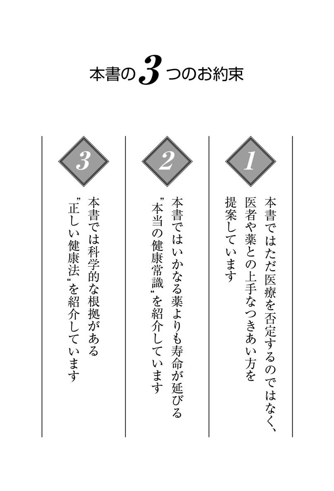
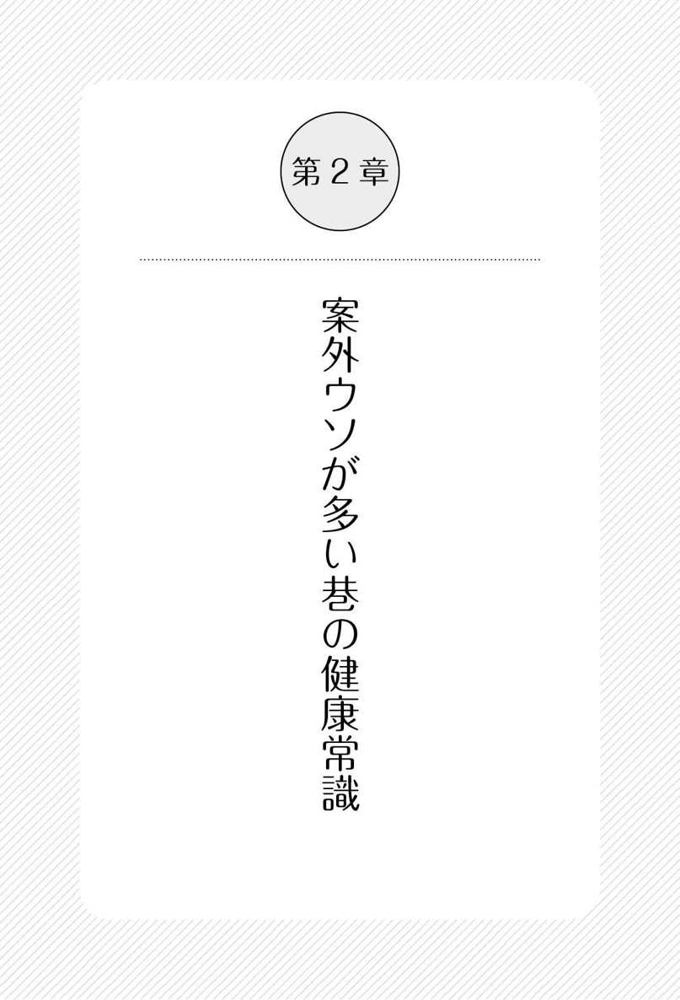
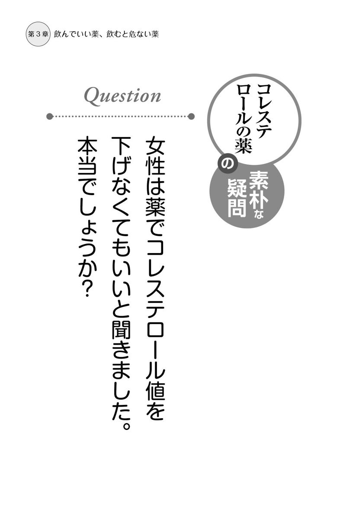
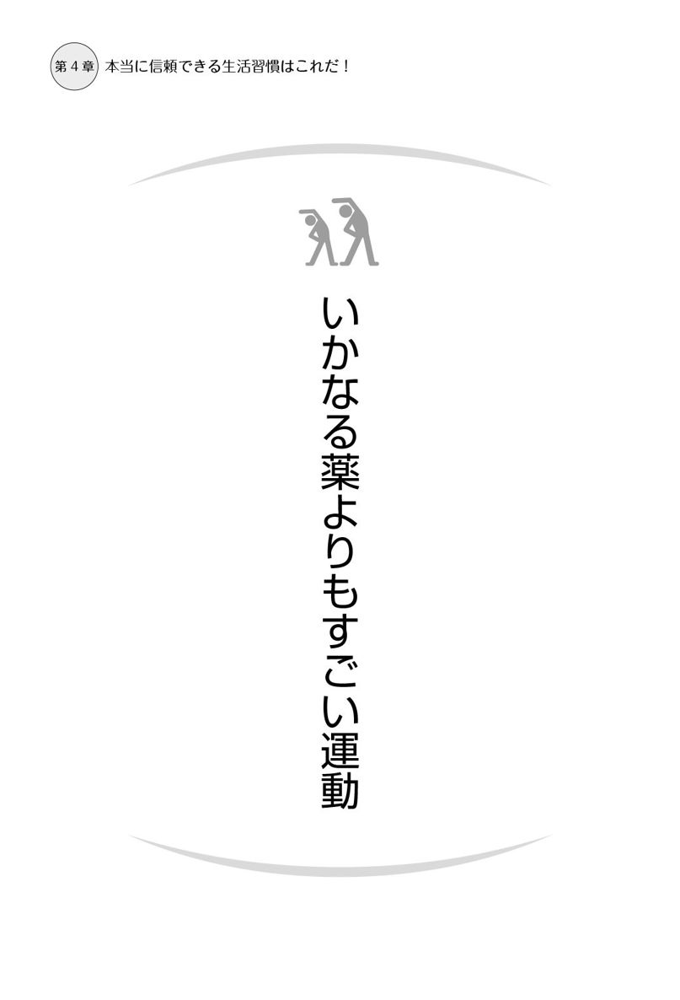

| 信じてはいけない医者 飲んではいけない薬 やってはいけない健康法 医療と健康の常識はウソだらけ | |
| 岡田 正彦 | |
| (2014) | |

はじめに
東京電力福島第一原子力発電所の事故の直後、専門家たちからは、「ただちに健康に影響はない」「放射能汚染は胸のレントゲン検査より少ないから安心」など、安全性を強調する説明が繰り返されました。しかし、
それからも、科学の信頼性が揺らぐ事件が多発しています。
ノバルティス社の高血圧治療薬ディオバンの臨床研究不正事件、理化学研究所のＳＴＡＰ細胞論文事件、人間ドック学会と他の学会による健康基準値論争......。
「一体、何が起こっているの？」「どう考えればいいの？」「日本はこれからどうなるの？」という声が聞こえてきます。一方で、
という、ためいき交じりの声も聞こえてきます。
私は、これらの問題の根っこは全て同じではないかと思っています。
● 研究者と企業の癒着
● メディアと企業の癒着
● 政治家と企業の癒着
● 統計データの誤認や悪用
● 検査や治療をたくさん行わないと病院経営が成り立たない医療制度
確かに、こうした構造の問題を見直さない限り、おかしな世の中は改善されず、市民は不利益を被り続けるでしょう。
あのとき初めて、「原子力村」と呼ばれる、原発を推進することで利益を得ている政治家、企業、研究者の集団がいることに気づいた人が多かったと思います。
けれども、「だれも信じられない」「どうしたらいいのかわからない」と、思考が停止したままになっている人も多いのではないでしょうか。
日本人は大人しいので、声を上げたり、怒りを表すことをしません。しかし、
私は研修医だったころ、薬漬けの医療にとくに疑問を持たずにいました。
周りの先輩たちに習い、学んできたとおりの治療を行っていたのです。しかし、大量の薬の副作用で体調をくずす患者さんたちを見て、「こんな医療はおかしい。そのために、何をするべきだろう」と考え、予防医療学と医療統計学を研究することにしたのです。
この２つを研究してきた結果、医療の世界で「常識」とされてきたことには、根拠がないものが多いことに気づきました。
欧米では、１９９０年代から、大人数の協力者が参加し、長期間にわたって追跡が行われる「大規模調査」が頻繁に行われるようになり、その結果、信頼度の高いエビデンス（科学的根拠）が得られるようになってきました。
しかし、日本の医療は大規模調査への関心が低く、いまだに不可解な常識に縛られています。昔の動物実験の結果を元にしていたり、えらい先生の経験談が重視されすぎていたり......。
調査データを正しく読み解くには、深い洞察力が必要です。少なくとも、統計学の大原則が満たされていなければなりません。
● 意味のある分析であること
● 比較がなされていること
● 背景要因がそろえられていること
● 見かけだけの関係になっていないこと
● 同じ内容の要因が一緒に分析されていないこと
● 大規模な調査が行われていること
● 単に昔と比べただけではないこと
● 時間を追って調査が行われていること
● 目的と手段に矛盾がないこと
これらに基づいて医学情報を検証すると、信頼に足る物は、ごくわずかになります。しかし、現実的には、とるに足らないデータを信頼性があるデータだと誤認していたり、都合のいいところだけを切り取ったデータを鵜呑みにしていることが多いのです。専門家である医師がだまされているのですから、一般市民がだまされないようにすることは容易ではありません。
もうひとつ、調査データを見極める上で重要なことがあります。それは、医学の目的は何かということです。
たとえば、血圧を下げる薬を飲む目的はなんでしょうか。
検査値を改善することではなく、血圧を下げることにより脳卒中を予防し、この病気で死なないようにするためです。血圧がよく下がり、脳卒中が予防できても、副作用で他の病気が増えてしまうような薬は、飲む意味がありません。
「寿命が延びているかどうか」は、すべての医学情報を精査する際、重要なポイントになりますから、覚えておいて損はありません。
現在、世の中にはたくさんの情報が溢れていて、何が正しくて、何が間違っているのかを見極めることが、大変難しくなっています。統計データを利用した巧妙なごまかしのテクニックが横行していて、だまされないようにするのは至難の業です。
その情報の裏で、金儲けをしているのは誰か、を常に考えることです。前に述べた「構造の問題」は、そう簡単には変わらないでしょう。しかし、
本書では、巷にあふれている健康情報の見極め方や、医者や薬との上手なつき合い方、生活習慣病やがんを予防するために有効な方法を、わかりやすく紹介しています。
全ての情報は、大規模調査から得られた、最新のエビデンスに基づいたものです。
本書が、あなたとあなたのご家族の健康を守るために役立てば幸いです。
そして、世の中を変える意識改革の輪が広がっていくことを願っています。
調査データには信頼できないものもある
「健康に暮らしたい」と、誰もが願います。
私はこの願いをかなえるために、長年、調査や研究を行ってきました。毎日、山のような原著論文を一生懸命読んでいますが、最近では、情報が複雑になりすぎて、世の中で起きていることを正しく把握するのが、難しくなってきたと感じています。
「◯◯という新薬が効果的だ」「◯◯をすると健康にいい」などの情報には、証拠となる調査データがつけられています。私たちは、「調査データがあれば、その情報は信頼できる」と思いがちです。しかし、
それを知らない人が多いのをいいことに、さも根拠があるように見せかける「ごまかしの手口」がはびこっています。この章では、「データの信頼性を判断する目」を養う方法をご紹介します。
必要のない薬まで処方される現在の医療制度
血圧を下げる薬、血糖値を下げる薬、コレステロール値を下げる薬など、日常的に薬を飲んでいる人は多いものです。そして、ほとんどの人が、「こんなにたくさんの薬を飲む必要はあるのだろうか？」と疑問に思っています。
しかし、「薬をやめたら悪くなってしまうかも......」「薬を飲みたくないけれど、そんなことを言ったら医者に怒られてしまうかな......」という不安から、モヤモヤした気持ちを抱えたまま飲み続けている、というのが現状ではないでしょうか。
そこには「医療をとりまく構造」の問題があります。
この章では、なぜ私たちが「必要のない薬まで飲まされてしまうのか」について解説します。薬との具体的なつき合い方については、第３章もご参照ください。
医療は「ほどほど」がいい
私は予防医療学とともに、医療統計学を研究してきました。たくさんのボランティアが参加し、長期間にわたって追跡が行われる「大規模調査」で得られた貴重な調査データをたくさん解析してきました。その結果、わかったことは、
つまり、薬の副作用でよけい体調が悪くなったり、レントゲン検査の影響でがんになってしまったりというように、デメリットがメリットを上回るということです。
医療は「ほどほど」がいいのです。
この章では、いきすぎた医療の問題点についても解説します。
最近よく聞く「エビデンス（科学的根拠）」の本当の意味
サプリメントやダイエット用品などの広告は、とても魅力的に作られています。
「使った人の◯％が効果を実感しています」「◯◯学会で発表されました」などと聞くと、とてもよいもののように感じられて、飛びつきたくなってしまいます。
みなさんは「エビデンス」という言葉をご存知でしょうか。これは、１９９０年代のはじめごろに医学の分野で提唱された概念で、「エビデンス・ベースド・メディシン」という言葉から端を発しています。「医療は個人の経験や勘、あるいは単なる慣習によるのではなく、科学的な根拠（エビデンス）に基づいて行われるべき」という意味です。
それまでの医療も、動物実験や試験管を使った実験データに基づいて行われていました。しかし、人間の行動は複雑で多岐に渡るため、こういったデータはそのまま現実の医療にはあてはまらない......ということがわかってきたのです。
そこで、「大勢の人間を対象に調べる」「比べる相手を公平に用意する」「長い年月をかけて結果が出るまで見届ける」という３条件を満たす研究手法で得られたデータを、真の「エビデンス」と呼ぶことにしたのです。
意味がすり替えられてしまった「エビデンス」
最近、政治家やマスコミがこぞってエビデンスという言葉を使い始めているので、世間での認知度が高まってきました。ところが、流行語になったとたんに、意味がすり替えられるようになってしまいました。
単なる数字をエビデンスと称したり、学会やえらい先生の意見を利用して、さもエビデンスがあるかのように見せかける手法がはびこってきたのです。
私には、エビデンスという言葉が、世の中の混乱に拍車をかけているように感じられます。そこで、情報にだまされないための５つのチェックポイントを作ってみました。サプリメントを例にして、検証してみましょう。
サプリメントの広告には「飲んだらよくなりました」というようなうたい文句が並んでいますが、「飲まなかったらどうなったのか」は、あまり書いてありません。
例えば、風邪薬を飲むと風邪が治ります。しかし、たいていの風邪は薬を飲まなくても治ります。つまり、「飲んだらよくなった」けれど、「飲まなくてもよくなった」のかもしれません。両方を比べてみなければ、本当に効果があったかどうかはわかりません。
飲んだ人と飲まなかった人を比べていればいいかというと、そう単純ではありません。例えば、サプリメントを飲むグループを若い人にして、飲まないグループを高齢者にしたらどうでしょう。飲んだグループでいい結果が出ても、それは、単に若い人が多かったからかもしれません。このように、効きそうな人と効かなそうな人を意図的に選んで行う調査はインチキです。
比べる相手を公平に選んで行う方法を、学術用語では「ランダム化試験」といいます。「ランダム」という言葉をぜひ覚えてください。この言葉が出てきたら、研究者がウソをついていない限り、ひとまず公平だということになります。
飲んだ人と飲まなかった人を公平に選んで比べていたとしても、その数が少なければ信頼性に欠けます。テレビのバラエティ番組で、10人くらいの人を集めて実験をしているのを見かけますが、人間には大きな個人差があるので、別の10人で実験をしたら、全く別の結果になる可能性があります。本当に信頼性の高い結果を出すには、少なくとも１０００人以上で調べる必要があります。
サプリメントのＣＭで、購入した人が体験談を語るものがよくありますが、画面のすみに小さく「個人の感想です」というテロップが流れていますよね。こういうものは信用できないと思っていいでしょう。
飲んだ人と飲まなかった人を公平に選び、大勢の人で調べたとします。しかし、長期間調べているでしょうか。薬などの効果は、飲み始めは強く感じても、長く服用すると薄れてくることが多いものです。
つまり、「短期間の調査は、よい結果が出ることが多い」のです。薬やサプリメントなどは長く飲むものです。年月をかけて調べたデータでないと、本当に効果があるのかどうか、そして、安全性に問題がないかどうかはわかりません。
飲んだ人と飲まなかった人を公平に選び、大勢の人で、長期間調べたとします。けれども、そのサプリメントを飲んで、果たして寿命は延びているでしょうか？ 私たちは「ひざの痛みがなくなった」とか、「検査値が改善した」などの、目先の変化に一喜一憂しがちです。しかし、そのサプリメントに重大な副作用があり、飲んだことで亡くなっている人がいれば、平均の寿命は縮みます。本当に体によいものなら、寿命が延びているはずです。
ここまでクリアできれば、まず信頼できます。しかし、お気づきでしょうか。
このチェックポイントは、ごく初歩的なものです。だまされないための知識をもっと身につけたい人は、「統計学」を勉強するといいでしょう。
最近、全てのジャンルにおいて、世界的にごまかしの手口が進化していて、専門家ですらだまされてしまう世の中です。ですから、みなさんがだまされてしまうのはある意味しかたがないことです。
しかし、「怪しげなエビデンスの裏には、金儲けを企んでいる人がいる」ということを意識してください。それだけで、情報を見る目は厳しくなります。みなさんの目が厳しくなれば、企業はいいかげんな商品を作ることはできなくなり、マスコミもずさんな記事が書けなくなるでしょう。
「生活指導をすると病院が赤字になる」構造
高血圧症、糖尿病、脂質異常症などの生活習慣病は、不適切な生活習慣が原因ですから、治療の第一番目は「生活習慣の改善」です。ガイドライン（学会が定めている検査や治療の方針）にも、「まずは生活習慣の改善を行い、それでも検査値が改善されなければ、薬による治療を開始する」となっています。
しかし、食事や運動などの指導はほとんどなく、いきなり薬が処方されることが多いようです。その原因の１つは保険制度にあります。現行の保険制度の報酬の対象は、医師の技術部分はごくわずかで、大半が検査と治療行為です。
そういった事情で、本来、薬を飲まなくてもいい人にまで薬が処方されたり、あまり必要のない検査が行われているのです。
「薬は飲みたくありません」と言う勇気を持とう
こうした構造の問題で損をしないためには、「私は薬を飲みたくありません。食事を工夫したり、運動をがんばります」と言うことです。それで嫌な顔をしたり、怒りだすような医師は、いい医師とはいえません。
一方、患者さんに問題がある場合もあります。「せっかく病院に行ったんだもの。薬をもらって帰らなきゃ」とお土産がわりに薬を求める人がけっこういます。医師もまた、「薬を処方しないと納得しないだろう」「あとで具合が悪くなって訴えられたら大変」と先読みし、薬を処方することが少なくありません。
しかし、そんなことを、いつまでもしていていいのでしょうか。薬には副作用があるので、飲めばリスクを抱えることになります。また、病院に支払うお金も高くついてしまいます。つまり、自分で自分の首を絞めることになるのです。
医師が新薬を積極的に使うワケ
「夢の新薬」という言葉を聞いたことがあるでしょう。最新の科学技術を結集して作られた新薬は、古い薬よりも格段に優れているように感じられます。しかし、私は新薬は使いません。出たばかりの薬は、効果や安全性が確かではないからです。ところが、多くの医師は新薬を好んで使います。
それには理由があります。
大学病院や研究機関などは、製薬企業から研究費を受け取っています。しかし、実際に研究を行うのは企業で、大学病院は開発された新薬を試験評価するという役割になっています。つまり、企業から大学に流れるお金は、研究費というよりは謝礼、あるいは見返り的な性質を帯びたものです。
見返りをもらっている企業の新薬の評価は甘くなりがちです。悪い結果が出たときに、データに少し「手心」を加えてしまうことがないとはいえません。
そして、もちろん大学病院は、研究費を受けとっている企業の新薬を積極的に使います。
倫理上問題がある「研究者と企業が一体になる」構造
多くの医師は勉強熱心で、学会や勉強会によく参加します。そこでは、外国のえらい先生などが講演を行い、最新のエビデンスと称するデータをもとに新薬を紹介します。ところが、学会のスポンサーは製薬企業で、講演をする先生は謝礼をもらっています。つまり、多くの医師がバイアスのかかったデータに洗脳されてしまうのです。
企業からの研究費を一カ所にプールして、一度公的なお金にした上で、大学や研究機関が申請して受け取る。そんな仕組みを作れないものでしょうか。企業と研究者の直接のパイプを断ち切らないかぎり、みなさんはドクターもろともだまされ続けてしまうでしょう。
できることは、新薬をすすめられてもすぐに飛びつかないことです。今までの薬で安定した効果を得られているのなら、使う必要はありません。
生活習慣病の薬は、病気を治しているわけではない
薬を飲んで検査値が改善するのはいいことですが、それで病気が治ったといえるでしょうか。血圧が高くなる仕組みで考えてみましょう。
血管が固くなって収縮しなくなると、遠くまで血液が流れなくなくなります。臓器のなかでもっとも血液を使うのは脳と腎臓なので、この２つには血液量を測るセンサーがあります。血液が少なくなると、「働けないから、もっと圧力を上げろ」という信号を脳に送ります。それで、血圧が上がるのです。
私たちは、「血圧が高い」という結果だけに注目して薬を飲みがちです。「動脈が固くなって、血液が流れにくくなった」という原因には、あまり目を向けません。薬で血圧が下がれば安心してしまいます。しかし、病気の原因はそのままなので、薬をやめれば元に戻ってしまいます。症状がかなり進んでしまった人は別として、生活習慣病の予備群や初期の段階の人は、原因に目を向けたほうが有益です。
生活習慣の改善よりも、薬を飲むほうが科学的な感じがしますが、どんな薬にも副作用があります。薬に期待しすぎるのは間違いです。
健診を受けると病気が増えるカラクリ
「病気の早期発見・早期治療のために健康診断は大切だ」と誰もが思っています。しかし、定期的に健診を受けている人のほうが寿命が短いと聞いたら、どう思われるでしょうか。
これは、健診で病気が見つかって命拾いする人がいる一方で、レントゲン検査や薬、手術の副作用で健康を害してしまう人が多いからです。つまり、早期発見・早期治療の効果は相殺されてしまうのです。
メリット、デメリットを知った上で、何を選択するかは個人の哲学の問題になるでしょう。「レントゲン検査を受けるとがんの可能性が高まるから、私は血液検査だけにしたい」と思う人もいるでしょうし、「レントゲン検査を受けるとがんの可能性は高まるが、私はがんを見落としてしまうほうが嫌だから、検査を受けたほうが安心する」という人もいるでしょう。
要は、個々が判断するための情報を、正しく提供しなければいけないと思うのです。
人間が遺伝子や細胞に手を加えることの危険性
近年、細胞に手を加える再生医療の研究が進んでいます。しかし、人間の遺伝子や細胞は、長い長い年月をかけて出来上がったものです。構造はわかっても、機能は全く解明できていないといっても過言ではありません。人間の体には巧妙なしかけがあります。そこに手を加えてもうまくいくとは思えません。
再生医療で、特定の病気を治すことができるかもしれません。しかし、遺伝子や細胞をいじることによって、眠っていた他の病気を引き起こしてしまう可能性があります。
遺伝子組み換え食品も同じです。
遺伝子を組み換えることによって、未知の物質が生まれるかもしれません。そして、それを食べたとき、何が起こるかは予測がつきません。
また、遺伝子組み換えの作物は、害虫や天候異変に強いため、いっぺんに世界を席巻してしまう可能性があります。単一の種しかなくなってしまったら、なにかとんでもない異変が起きたときに、その種は絶滅してしまいます。遺伝子組み換えは、そういった危険もはらんでいます。
成果の小さい医療をいつまで続けるのか
健康問題は、自然科学であると同時に、社会学としての側面もあります。それは、政治や行政の考えによって、方向性が大きく変わってしまうからです。
科学には莫大なコストがかかる割に、マイナス面もあるということを忘れてはなりません。
科学に夢や希望を持つことは必要ですが、もっと現実的に物ごとを考えなければいけない時代がきているのではないでしょうか。
医療費には私達の税金が使われています。
科学的根拠のない医療や健診に、莫大なコストをかけている余裕はないはずです。本当に必要な医療は何かを、あらためて、考えてみる時がきているのではないかと思います。

健康情報は鵜呑みにせず、一度疑ってみる
テレビ、雑誌、新聞などのマスメディアでは、健康に関するさまざまな情報が発信されています。耳寄りな情報もありますが、全く根拠のない都市伝説のような情報も少なくありません。
以下の健康情報について、ＹＥＳかＮＯで答えてください。
●低炭水化物ダイエットは有効だ
●骨粗鬆症にはカルシウムのサプリメントが有効だ
●ふくらはぎをもむと体にいい
●ＢＭＩは22が理想だ
●お酒を飲むと太る
●免疫力を高めると病気を防げる
●卵はコレステロールが多いから１日１個が適量だ
●ストレスは体に悪い
●水分補給はこまめにする
●睡眠時間が短いと体に悪い
●尿酸値が高い人はプリン体カットのビールなら安心だ
●高齢者はいたわらなければいけない
●原発を止めると電力は絶対的に不足する
実は、これらの答えは全てＮＯです。
常識だと思っていた健康情報には、案外ウソが多いということがおわかりいただけたでしょうか。
次のページから、信頼できる学術論文をもとに、これらの情報の誤解をひもといていきます。自分や家族の身を守るためには、マスメディアの情報を鵜飲みにせず、「だまされているかもしれない」と一度疑う習慣をつけましょう。１章で紹介した５つのチェックポイントは、医療に限らず、さまざまな情報を見極める際にも役立ちます。
炭水化物を減らすと脂肪が落ちる
やせなればならない人や、ちょっとだけやせてスマートになりたい人は多いものです。近年、話題なのが低炭水化物ダイエット（糖質制限ダイエット）です。
これは、三大栄養素である炭水化物、たんぱく質、脂肪のうち、炭水化物を控えるもので、具体的には、ごはん、パン、麺類、甘いものなどをとらないようにするものです。
このダイエット法は、欧米などでは昔から行われていて、流行したり廃れたりを繰り返してきました。日本では近年、糖尿病の人が行うと減量しやすく、血糖値が改善することがわかり、病気の治療法としても注目されるようになりました。
意外に知られていない、低炭水化物ダイエットの重大な問題点
「炭水化物さえ控えれば、肉は好きなだけ食べてもいい」といううたい文句は、食いしん坊にとって魅力的です。しかし、このダイエット法には重大な問題が２つあることを知っておかねばなりません。
炭水化物を制限して、たんぱく質を大量にとると、エネルギー源として体脂肪が急激に分解・消費されるようになります。すると、その代謝物（ケトン体）が血液中に急増し、昏睡などの健康障害が起こることがあります。
肉には飽和脂肪酸やコレステロールが多く含まれているため、とりすぎると動脈硬化や心臓病を引き起こす原因になります。つまり、
糖尿病の人などが、医師の指導のもとで行うのはいいでしょうが、ただやせたいという理由から、自己流でこのダイエットを行うことは、おすすめできません。
理想的な食事のバランスは「主食をしっかり」
三大栄養素の理想的なバランスは、１日の総カロリーに対して、炭水化物55％、たんぱく質20％、脂肪25％の割合です（高度な肥満の場合は、たんぱく質を30％くらいに増やし、炭水化物を45％くらいに減らす場合もあります）。
つまり、カロリーの約半分は炭水化物からとるべきで、全くとらなくなってしまったら、一気に栄養素のバランスが崩れてしまうことは明白です。
マスコミの情報に踊らされないように注意しましょう。
骨粗鬆症は骨がもろくなり、骨折しやすくなる病気
骨粗鬆症は骨からカルシウムが抜けて、もろくなってしまう病気です。
骨粗鬆症のある高齢の女性が転倒すると、大腿骨の頚部や転子部（脚のつけ根）を折ることが多く、歩けない状態から、寝たきりになってしまうことが多いのが問題です。
骨は変化していないように見えますが、常に破壊と再生を繰り返しています。これを骨代謝といいますが、食事からのカルシウムの摂取量が少なかったり、加齢によって骨代謝の機能が衰えると、破壊と再生のバランスが崩れ、骨からカルシウムが抜けてしまうのです。
骨粗鬆症の予防や治療には、カルシウムを積極的にとることが推奨されていますが、とり方には注意が必要です。
カルシウムだけとっても骨は元には戻らない
従来、骨粗鬆症の治療には、カルシウム剤と活性型ビタミンＤ３が処方されてきました。カルシウムは失われたカルシウムを補うため、活性型ビタミンＤ３はカルシウムが腸から吸収されるのを助けるためです。
ところが、諸外国で行われた長期的な調査から、この２つには骨折を予防する効果がないことがわかってきました。なぜなら、骨代謝が行われるには、カルシウムや活性型ビタミンＤ３以外に、さまざまなホルモン、酵素、ビタミンなどが総合的に必要だからです。骨粗鬆症になった人は、これらのいずれか、あるいは全てに問題が生じ、骨からカルシウムが抜けてしまっているのです。つまり、単純にカルシウムだけを補給しても、骨は元の状態には戻りません。
それどころか、薬やサプリメントでカルシウムを大量に服用すると、骨以外の部分にたまってしまい、心臓病や腎臓病など、思わぬことが起きたり、骨折がむしろ増えてしまうというデータさえあります。
薬やサプリメントに頼らず食生活の改善を
牛乳、小魚、海藻、大豆などにはカルシウムが多く含まれていて、これらには骨粗鬆症を予防する効果があることが確認されています。とくに、若いころから魚を習慣的に食べていた人に骨粗鬆症が少ないこともわかってきました。ただし、これらはあくまでも予防であり、
つまり、骨粗鬆症を予防するためには、若い頃からカルシウムの豊富な食品を、いろいろなものから「とり続ける」ことが大切なのであり、カルシウム入りの薬やサプリメントを飲んでも、意味がありません。まず、食生活を改善しましょう。とくに、魚を習慣的に食べるのがおすすめです。
ふくらはぎは第２の心臓
最近、ふくらはぎをマッサージする健康法がはやっています。
「ふくらはぎをもむと、全身の血液の流れがよくなり、万病にきく」とのことですが、私はおすすめできません。
血管には動脈と静脈があります。心臓から各臓器に酸素や栄養を運ぶのが動脈、各臓器から炭酸ガスや老廃物を心臓などに戻すのが静脈です。動脈は心臓がポンプとなって血液を押し出しますが、静脈にはポンプにあたるものがありません。つまり、静脈血は、重力の影響で脚にたまりやすいのです。
エコノミークラス症候群という病気をご存知でしょうか。
「飛行機に長時間乗ったあと、降りて歩き始めたとたんに、呼吸困難やショックを起こし、時には亡くなる」というのが典型的な症状なので、この名がついています。
狭いいすに座ったままじっとしていると、脚の血液の流れが悪くなり、静脈のなかに血液の塊（血栓）ができることがあります。これが、歩くことをきっかけに脚の静脈から離れ、血液にのって肺などに到着し、血管が閉塞してしまうことから起こります。
この状態を、「血栓・塞栓症」といいます。
コレステロールが血管にたまっていて（動脈硬化）、かつ中性脂肪値が高い人ほど危険です。なぜなら、動脈硬化になると、血管の内側の細胞の機能が低下し、血液が固まるのを防ぐ機能が低下してしまうため、血栓ができやすくなるからです。
ふくらはぎのポンプ機能を期待するなら、もむよりも、普段からよく歩いたり、足を動かす運動をするほうが、はるかに安全で効果的です。
マッサージは場所とやり方に注意が必要
マッサージは場所とやり方を間違えると危険です。
とくに、首すじや眼球には、血圧をコントロールするセンサーがあり、強く押すと急に血圧が下がって、気分が悪くなったり、失神してしまうこともあります。
ちなみに、肩はもんでも大丈夫です。
自分の体質に合っているかどうか、メリット、デメリットをよく知ってから、取り入れましょう。
ＢＭＩ22～26がもっとも長生き
肥満をはかる方法のなかで、もっともよく使われているのがＢＭＩです。
これはbody mass indexの略で、体重を身長の二乗で割り算した値です。以下の公式から、ご自身のＢＭＩを求めてみてください。
日本では、ＢＭＩ22が理想といわれ、25以上は肥満と判定されてきました。しかし、私が調べてみたところ、明確な根拠がないことがわかりました。
一方、欧米では確かな追跡調査があり、ＢＭＩ22～26くらいの人が、もっとも長生きだということがわかっています。つまり、
やせすぎも死亡率が高い
肥満がよくないことは明確です。もっとも長生きなＢＭＩ24の人を基準とすると、ＢＭＩ30になると死亡率が１・６倍くらいになることがわかっています。
一方で、やせすぎもよくないことがわかっています。ＢＭＩが20になると、死亡率が１・４倍くらいになります。
やせすぎで死亡率が上がる理由はよくわかっていません。
病気に対する抵抗力が弱いのかもしれませんし、すでに病気があり、それが理由でやせている人が、調査対象に含まれていたのかもしれません。しかし、
腹囲や体脂肪率よりもＢＭＩを基準にしよう
肥満をはかる方法は、ＢＭＩのほかに腹囲や体脂肪率などもあります。しかし、この２つは、将来の死亡率とはまったく関係していないことがわかっています。
腹囲や体脂肪率は、どちらも測定で誤差が出やすく、そういった点でも信頼性に欠けます。肥満をはかるには、ＢＭＩを基準にするのが一番です。
お酒は高カロリーだが、体にはたまらない
お酒を飲むと太ると思っている人は多いでしょう。ビールが好きな人はお腹が出ているイメージがあり、「ビール腹」などといわれますね。身近なお酒のカロリーは、
●缶ビール１本（３５０㎖）約１５０ｋｃａｌ
●日本酒１合（清酒）約１９０ｋｃａｌ
ほどとなっています。しかし、表示のカロリーが全て体内に吸収されるわけではないことをご存知でしょうか。
お酒の成分は、アルコールとその他の成分に分かれます。その他の成分というのは、原料の米、麦芽、ぶどうなどのエキスや、味つけのためのアミノ酸や糖分などのことです。
アルコールは体内に入ると分解され、最後に水と炭酸ガスになります。一部は汗となって蒸発してしまい、いずれも体内には残りません。
一方、その他の成分は体にたまります。ビールや日本酒のカロリーからアルコール分を差し引くと、いずれも50ｋｃａｌほどです。つまり、
ウイスキーや焼酎などの蒸留酒にいたっては、その他の成分をほとんど含まないため、体に残るカロリーはほとんどゼロと考えていいでしょう。
飲酒量とＢＭＩの関係を調べたデータでも、「お酒をほとんど飲まない人」と「毎日お酒を飲む人」では、ＢＭＩ（平均値）に全く差がないことがわかっています。
お酒を飲むと太るのはつまみの食べすぎが原因
では、なぜビール腹になってしまうのでしょうか。考えられるのは、「つまみ」です。
お酒を飲むとき、なんらかのつまみを食べる人が多いでしょう。その後で、家族と同じ食事をとっていたら、単純に食べすぎになります。お酒で気が大きくなって、調子にのって食べすぎる場合もあるでしょう。
また、お酒を飲みながらつまみを食べていると、長時間座ったままになるので、カロリーも消費されません。つまり、
お酒を飲む頻度と血液検査の結果を比べてみたところ、毎日お酒を飲んでいる人は、まったく飲まない人に比べて、コレステロール値が低く、血糖値も適切な範囲にあることがわかりました。そして、
やはりお酒も、ほどほどがいいようです。
アレルギーは免疫力が強すぎて起こる
最近、「◯◯で免疫力を高める」という類の健康法が流行しています。しかし、免疫力は自分自身の努力で高められるものなのでしょうか。
免疫の本来の意味は、細菌やウイルスなど、体の外から侵入してくる外敵に対し、それを無毒化するためのしくみのことです。
もし、このしくみがなければ、けがの傷口からわずかに雑菌が入ったり、ちょっとした風邪をひいただけで、命を落としてしまうかもしれません。免疫は人間が無事に生きていくうえで、必須のしくみです。しかし、
アトピー性皮膚炎や花粉症などは、本来は外敵ではないはずの食品や花粉などに対して、免疫機能が過剰に反応するために起こります。食品や花粉などに含まれている抗原（アレルゲン）が目や鼻の粘膜系にインプットされ、これらを異物として攻撃する抗体ができるために症状が起こります。
自己免疫疾患という病気も似ています。関節リウマチなどがそれで、自分自身の体の一部に対してアレルギー反応を起こしてしまうものです。
「現代人は免疫力が低下している」という誤解
ときどき、若者世代に結核などの感染症が流行します。すると、「若者世代の免疫力、弱まる」などと報道されることがあります。しかし、
こうした間違った報道が、「現代人は免疫力が落ちている」と誤解させる原因になっているのかもしれません。
免疫力は測定する方法も高める方法もわかっていない
免疫力のしくみはとても複雑で、「免疫力とは何か」をはっきり定義したり、そのパワーを測定することはできません。
がん細胞やウイルスに感染した細胞を退治するキラーＴ細胞や、ナチュラルキラー（ＮＫ）細胞の機能を、特殊な方法で測定できることはわかっています。しかし、それは免疫機能のごく一部にすぎません。
ですから、免疫力アップをうたった健康法やサプリメントなどは、根拠がないものと思って近づかないほうがいいでしょう。
コレステロールは卵、内臓、肉の脂身に多い
血液中にコレステロールが多すぎると、血管壁にたまってしまい、動脈硬化の原因になります。さまざまな調査から、
コレステロールを多く含む食品には、鶏卵の黄身、あんこうのきも、からすみ、たたみいわし、しらす干し、レバー、いくら、たらこ、バターなどがあります。
また、コレステロールは肉の脂身にも多く含まれます。
肉は１回に食べる量が多く、食べる頻度も高いので、とりすぎないように注意しましょう。ちなみに、若鶏皮付きもも肉を約２２０ｇ食べると、３００㎎のコレステロールを摂取することになります。
コレステロールは肝臓でも作られる
卵を２個食べるとコレステロールを５２０㎎くらい摂取することになるので、「卵は１日１個」という説は正しいことになります。
しかし、実際には、卵を１日に４個、５個食べても検査値が上がらない人もいますし、ほんの少し食べただけでも検査値が上がってしまう人もいます。なぜなら、
食事でコレステロールをまったくとらなくても、血中のコレステロールはなくなりません。反対に、食事でたくさんとると、合成が減ります。それでも多すぎるときは、肝臓などにためる働きがあり、血中コレステロールは一定に保たれるようになっています。コレステロール値が高い人は、このしくみに乱れが生じる体質なので、血中にコレステロールが多くなります。
しかし、コレステロールは、本来たくさんとらなくていい栄養素であることは間違いありません。私は、現代人は全員、コレステロールのとりすぎだと思っています。
「日常で起こる変化＝刺激」がストレスの原因になる
ストレスと聞くと、嫌なことやつらいことを連想します。
ストレスを受けることで、食欲が落ちたり、気持ちが不安定になったり、なかなか眠れなくなったり......。こういったことは、だれもが経験していることです。ときには、進学や就職、結婚、出産などのうれしいできごとも、ストレスの原因になります。原因にかかわらず、強いストレスを繰り返し受け続けると、心や体の病気になってしまうことがあります。
ストレスを受けると、人間の体にはさまざまな変化が生じます。
よく知られているのは、自律神経に与える影響です。自律神経には交感神経と副交感神経の２種類があり、２つが共同して食欲、呼吸、睡眠、血圧調節など、人間が生きていくために必須の機能をコントロールしています。そのほとんどは無意識のうちに行われます。
強いストレスを受けると、心臓がドキドキしたり、顔が青ざめたりたり、冷や汗をかいたり、食欲が落ちたりします。これは、交感神経の働きによるものです。
一方、リラックスしているときは、心臓の鼓動が遅くなり、胃腸がよく働き、だ液の分泌も盛んになってきます。これは副交感神経の働きによります。
適度なストレスは体にいいが、過度なストレスは体に悪い
ストレスは本来、体に適度な刺激を与えて代謝を活性化し、元気に生きていくために欠かせないものです。
大昔であれば、狩りをするため、あるいは敵と戦うために欠かせないものでした。現代にあっては、複雑な社会のなかで、人と競うために必要です。
ストレスが交感神経を興奮させて血管を収縮させると、血圧が上がります。血圧が低くては戦えませんから、これは、しごく当然のことです。しかし、
ストレスが全くないと太ってしまう
一方、ストレスが全くないのも不健康です。
交感神経は人間が活動する際に働きます。つまり、ヒトをやせさせる方向に働きます。反対に、副交感神経は休息する際に働きます。つまり、ヒトを太らせる方向に働きます。ということは、ストレスが全くないと太りやすくなるのです。
水をとりすぎるようになった日本人
毎年夏になると、「こまめな水分補給で熱中症を予防しよう」「のどが乾く前に水分補給を」などとテレビやラジオが連呼しています。電車にのっていても、街中でも、ペットボトルを持ち歩いている人をよく見かけます。
しかし、昔は水筒を持ち歩いている人など、いませんでした。
たとえば、アフリカの原住民は、１日中ほとんど水分をとりません。その代わり、汗もかきません。水の少ない土地で生まれ育つと、水分をとらずに生きていける体になるのです。
日本人が水をとりすぎるようになった背景には、熱中症で倒れる人が増えたことがあります。対策として、水分をたくさんとることが奨励されていますが、熱中症は、必ずしも水分不足だけで起こるわけではありません。
熱中症の原因はひ弱な自律神経
昔から夏は暑かったわけですが、倒れる人はあまりいませんでした。現代人は、冷暖房完備の居住空間ですごしているため、自律神経（77ページ参照）がひ弱です。そのため、気候の急変にうまく対応できず、熱中症になりやすいのです。
自律神経を鍛えるには、冷暖房に頼りすぎないことと、運動習慣を持つことがすすめられます。
水はのどが乾いたときだけ飲めばいい
「毎日２Ｌの水を飲むと健康になれる」などという健康法もあるようです。しかし、どれくらいの水分が必要かどうかは、体が一番よく知っています。
人間の体は、血液中の水分量や塩分濃度を絶えずチェックするしくみが働いていて、水分が足りないと判断すると、「のどが乾いた」という信号を発するようになっています。つまり、
ただし、水分を大量に、しかも急速にとるのは危険です。血液が一時的に薄まり、こむら返り、疲労感などが起こることがあります。重症になると、けいれんや意識障害などが起こる場合もあります。これを水中毒といいます。そこまでいかなくても、
とくにこまめな水分補給ほど、胃腸に負担をかけることになるので注意しましょう。

長く寝すぎる人のほうが病気になりやすい
眠れないと悩んでいる人は多いものです。「もう何日も眠れない。このまま死んでしまうのではないだろうか......」と深刻に苦しんでいる人もいます。
そもそも、人はなぜ眠るのかというと、脳の記憶を整理するためとか、体内の老廃物を処理するためなど諸説あり、はっきりしたことはわかっていません。
では、睡眠時間が短いと体に悪いのでしょうか。
平均睡眠時間と死亡率との関係を調べたデータはいろいろありますが、どのデータも結論は同じで、
私は日本人を対象に、睡眠時間と病気（動脈硬化症）との関係を調べたことがありますが、結果、２つ重大な発見がありました。
●平均の睡眠時間が６時間の人がもっとも病気が少ない
●睡眠時間が短すぎる人より、長すぎる人の方が病気になりやすい
理由は、以下のように考えられます。
長い間体を動かさないと、エコノミークラス症候群になりやすいという話を前にしましたが（56ページ参照）、睡眠時間が長すぎるのも同じことで、血液の循環が滞ってしまうのです。
眠れないことを気にしすぎない
睡眠時間が少ないことより、眠れないことを気にしすぎるあまり、余計なストレスを抱え込むほうが問題かもしれません。ちなみに、
以下は、アメリカの研究者が実態調査からまとめた「眠りの６カ条」です。睡眠薬に頼る前に実践してみてはいかがでしょうか。
●第１条 週３回以上運動する
●第２条 昼寝をしない
●第３条 寝る前にアルコールやお茶を飲まない
●第４条 睡眠薬に頼らず、寝る前には薬をなるべく飲まない
●第５条 寝る前にいつもと違うことをしない
●第６条 いつもと同じ時間に寝床につく
尿酸値が高くなると痛風発作が起きる
健診などで「尿酸値が高い」といわれても、自覚症状がないため、放っておく人が多いようです。しかし、尿酸値が高くなると、痛風発作が起きたり、尿路結石や腎障害を招くことがあるので注意が必要です。
尿酸はプリン体から作られます。プリン体は細胞核にある核酸を構成する物質です。食品は細胞からできているため、プリン体が含まれています。ちなみに、プリンという名前ですが、食べ物のプリンとは全く関係ありません。
プリン体は体内で尿酸に変化し、通常、尿中に排泄されます。しかし、体質によってはこのしくみがうまくいかず、血液中で針状の結晶を作り、関節に激しい炎症を起こすのです。
プリン体もＮＧだが、アルコール自体がＮＧ
「尿酸値が高い人は、プリン体の多いビールを控えたほうがいい」ということは、よく知られています。そのため、「プリン体カットのビールにすれば大丈夫」「ビールをやめて焼酎にすれば大丈夫」などと思っている人が多いようです。しかし、これは間違い。
尿酸値が高い人は、以下の順でお酒と付き合いましょう。
①アルコール飲料は控えたほうがいい
②種類より量に気をつける
③プリン体の多いビールは避ける
食事と運動で尿酸値は下げられる
痛風発作が起こってしまったら、病院で治療を受けるしかありませんが、健診で尿酸値の異常を指摘されただけであれば、生活習慣の改善を行うことで、発病を予防できます。
食事では、食べすぎ飲みすぎと、プリン体の過剰摂取に注意しましょう。いずれも尿酸値を上昇させる原因になります。
肥満だと体内での尿酸産生が過剰になったり、尿酸排泄量が低下するといわれているので、適度な運動で肥満を解消することも大切です。また、体を動かすことは、尿酸値の上昇につながりやすいストレスの解消にも役立ちます。
バリアフリーは足腰の衰えを加速させる
高齢者をいたわり、配慮するのはよいことですが、なかには「余計なお世話」もあるようです。近年、住宅のバリアフリー化が進んでいますが、これは、高齢者に運動を奨励することと逆行しています。
バリアフリーは、家のなかの階段や段差などの障害物をなくすもので、高齢者や障害者がつまずいたり、転倒しないようにという心遣いから生まれた発想です。
しかし、障害者には必要でも、高齢者に対する配慮としては間違っています。
いわゆる「寝たきり」は、足腰の衰えにより転倒し、骨折がきっかけになることが多いので、とにかく足腰を衰えさせないことが大切です。
もう年だから、今さら運動しても......。というのは間違っています。50歳代と60歳代の人々の調査で、日常的に運動している人は、運動していない人に比べ、その後８年間に死亡する割合が35％も低くなっていました。また、
ただし、この場合の運動は、ある程度の強度がなければならず、ブラブラと散歩をする程度では条件を満たしません（１６２ページ参照）。
関節の痛みがあっても安静にしてはダメ
中高年の運動を妨げる要因の１つに、腰痛やひざ痛があります。
痛みや腫れがあり、ときにはひざに水がたまることもあるため、主治医に運動を止められてしまうことがあります。しかし、
ひざ痛を起こす代表的な病気は変形性膝関節症ですが、この病気に対する運動療法の最新の研究結果をまとめると、以下のようになります。
●運動をすればするほど膝の症状は改善する
●家の中の運動、アウトドア、筋トレなど種目と場所は問わない
●６カ月以上続ける
この３つの原則は、ひざだけに限らず、全身のあらゆる関節の痛みに有効です。
それから、高齢者に家事や身の回りのことをやらせないのは、親切なようでいて、心の張りを失わせる原因になります。
本当のいたわりは自立を促すことです。
消費電力を20％減らせば、原発以外の発電でまかなえる
国内の原子力発電所は、全部で18カ所ですが、定期点検やトラブルですべて停止中です。東京電力福島第一原子力発電所の事故前でも稼働している割合は、５～９割でした。
資源エネルギー庁がまとめた『エネルギー白書』によれば、事故の前年の２０１０年の原子力による発電量は、全体の29・２％。つまり、原子力以外の発電量が70・８％となります。
しかし、実際の発電量と発電できる能力は違っていて、原子力以外の発電能力（設備用量）はもっと大きく、全体の約80％を占めます。
これまでの原子力発電重視のエネルギー政策により、原子力以外の発電施設は、一部遊んでいた、ということです。これらをフル稼働させると仮定すれば、
１９９５年ごろに生活を戻せば電力は足りる
過去20年の消費電力量をみてみると、ピークは２００７年です。この年の消費電力量の80％にあたるのは１９９５年。このころ、すでにエアコンは普及していました。パソコンや携帯電話は急激に増えましたが、それ以外は特別に電力を消費するようなものは増えていません。さまざまな活動に伴う消費電力が、まんべんなく、少しずつ増えて消費電力が20％アップしたように思われます。
２０１１年の夏は、15％の節電が求められ、かなり大変でした。しかし、このときは、火力発電の一部が震災の影響で停止していましたし、以前から休止していた発電所の対応も間に合わなかったという事情がありました。そういうことも考慮すると、20％の節電というのは、さほど難しいことではないように思われます。
明るすぎる照明は暗くする、テレビやパソコンは付けっぱなしにしない、近くの階へはエレベーターで移動せず階段を使う。こんなささやかな工夫の積み重ねで、クリアできるのではないでしょうか。
天然資源は枯渇しない
「天然資源はいつかなくなる」といわれます。石油には悲観論と楽観論があり、悲観論では２０２０年頃、楽観論では今世紀末には枯渇するといわれています。しかし、実際のところはよくわかっていません。
では、原発を止めたあと、どうすればいいのでしょう。実は、「核融合」と呼ばれるエネルギー技術があります。これは、水を燃料とする核反応によってエネルギーを作り出すものです。放射能を出さず、燃料は水なので、真の意味で究極のエネルギー源となるものです。実用化までには、長い年月がかかるため、この方法が完成するまでのつなぎとして、石油などの天然資源をうまく使っていけばいいと思います。
これらは、生物が堆積し、長い年月を経て作られていくものですから、地球上に生命がある限り、これからもできていきます。また、海底の資源にいたっては、ほとんど手つかずで無尽蔵です。深海を深掘する技術を研究して、液化天然ガス、石油、石炭のクリーンな利用法を研究するのも有効でしょう。
原発はいらない
「放射能汚染は、胸のレントゲン検査より少なかったので大丈夫」というフレーズが、原発事故の後さかんに使われました。しかし、レントゲン検査も、同じように、あるいはそれ以上に危険だということを知ってください（１５２ページ参照）。
放射能も放射線も、人類に与える影響があまりに大きすぎます。
放射能のない世界をつくるには、国民の一人ひとりが声を上げ、それをマスメディアが真摯に取り上げ、世の中を動かしていくしかないでしょう。
必要のない薬を減らす方法を考えよう
私は今、東京の病院で、生活習慣病の予防、治療を担当すると同時に、介護老人保健施設の施設長として、80歳を超える超高齢者に対して、治療や生活習慣のアドバイスなどを行っています。
高齢者が施設に入居するとき、薬を山のように抱えてきます。ほとんどの方が10種類以上です。そこで、私はこのように確認しています。「薬を飲みすぎると副作用が怖いですから、こちらの施設では薬をなるべく減らして、リハビリでお元気になっていただきたいと思っています。それでいいでしょうか」と。
すると九分九厘、顔がホッとほころび、「是非、お願いします。今まで病院に行くたびに、薬がどんどん増えて心配だったんです」とおっしゃいます。
この章では、薬を減らす方法や、医者や病院との上手なつきあい方を解説します。
軽い風邪なら、飲むだけ損になる風邪薬
風邪薬は早めに飲んだほうがいいと思っている人がいます。しかし、結論からいうと、風邪薬には風邪を治す作用も、進行を食い止める作用もありません。
「私はいつも、ひき始めにすぐに病院に行くから、重症にならないんです」という人がいますが、そういう人は健康な人です。普通の風邪は何もしなくても数日間で回復しますから、自然の経過で治ったものを、薬の効果と思い込んでいるのでしょう。
私達の体は、ウイルスが入ってくると熱が出るようにプログラミングされています。それは、熱にはウイルスを殺す作用があるからです。また、鼻水、せき、くしゃみなどは、細胞がウイルスと戦ってできた残骸を体外に排出する作用です。つまり、発熱、鼻水、せきなどの症状は、人間が自然のうちに獲得した大事な防御作用なのです。
風邪薬の代表的な成分は、熱を下げる成分、鼻水を止める成分、せきを止める成分の３つです。これらは、本来の防御作用を止めるものですから、体にいいわけがありません。外国のエビデンスによれば、風邪薬を飲むとかえって回復が遅くなることがわかっています。
しかし、薬を飲んだほうがいいときもあります。「熱が出て辛くて眠れないが、明日、大事な仕事で休めない」。そんなときは、市販の風邪薬で熱を下げましょう。その際、アセトアミノフェンという成分だけでできている風邪薬を選ぶと安心です。
健康な人にタミフルは必要ない
風邪薬ではありませんが、インフルエンザに使われるオセルタミビル（タミフル）について、知りたい人もいるでしょう。子供の異常行動などの副作用が話題になりましたが、最近では、肝臓障害や出血性大腸炎などの副作用もわかってきました。
オセルタミビルはインフルエンザウイルスが細胞内で増殖するのを止める作用があり、飲むと発熱日数が約１日半減ることがわかっています。しかし、オセルタミビルを飲んだ人と飲まなかった人では、インフルエンザが重症化して肺炎で入院する割合には、違いがないことがわかっています。つまり、重症化の予防にはならないということです。
３つの条件を満たしていれば、薬はやめられる
薬に関する質問で、外来で最も多いのが、「血圧の薬は、飲み始めたら一生やめられないのですか？」というものです。これは全く根拠のないウソです。
●最高血圧が１３０㎜Hg以上
●最低血圧が85㎜Hg以上
メタボ健診では、この２つのうちいずれかが当てはまると、「高血圧のリスクあり」となります。その場合、まずは生活習慣の改善を試みて、それでも改善されなければ薬を飲む、というのが本来の治療の進め方です。けれども、いきなり薬が処方されてしまうことが多いようです。しかし、
●最高血圧が１６０㎜Hg以下である
●脳卒中、心筋梗塞、動脈瘤などの持病がない
●ほかの検査データに異常がない
この３つの条件を満たしていれば、すぐに薬に頼る必要はありません。しかし、生活習慣の改善はしっかりやらなければいけません。
運動、食事、ストレス解消がポイント
血圧を下げるのに有効なのは運動です。毎日30分くらいの運動を習慣にしましょう。食事のポイントは塩分を控えることと、カリウムとカルシウムを多くとることです。カリウムとカルシウムは海藻、青菜、大豆などに多く含まれています。カルシウムは乳製品にも多いですが、動物性脂肪を多く含むのでとりすぎには注意が必要です。
また、急に血圧が上がってきた人は、ストレスが関係しているかもしれません。自分なりのストレス解消法を考えて実践しましょう。夕食のときに、お酒を１杯ほど飲みながらゆっくり過ごすのも、よいリラックス法です。
血圧の薬はリバウンドがなく、やめた反動で悪くなることがないので、やめやすい薬といえます。そもそも、人間の体は加齢とともに血管が老化し、血流が低下するため、それを補うために血圧が上がります。血圧が上がるのは自然の摂理です。ですから、血圧はやや高めでも、薬で無理に下げる必要はないのです。
そういった意味でも、血圧の薬はやめられる可能性が高いと思っていいでしょう。
瀬戸際の人に薬は必要ない
糖尿病と診断されるのは空腹時血糖が１２６㎎／dl以上の場合です。
一般の健康診断では40年以上前から、１１０㎎／dl以上を「リスクあり」と判定していました。ところが、メタボ健診では１００㎎／dl以上でも「リスクあり」になります。
メタボ健診は２００８年に始まりましたが、直前に判定基準を巡る激しいバトルがあり、結果、それまでの基準の１１０㎎／dlよりも、少し低い１００㎎／dlが採用されました。当時、このニュースを学会の会場で聞いた私は、背筋が寒くなりました。
なぜなら、基準が10㎎／dl下がると、「リスクあり」と判定される人が、２・５倍も増えてしまうことがわかっていたからです。
まず、このしくみをよく理解してください。
「リスクあり」の人には運動やダイエットが有効です。ガイドラインも、「生活習慣の改善を行い、それでも下がらない状態が続けば、薬による治療を開始する」となっています。生活習慣の改善が優先されることには賛成ですが、薬に関しては疑問があります。
なぜなら、糖尿病の薬を飲んだ人と、飲まずにダイエットと運動だけを行った人を追跡したある大規模調査では、後者のほうが、はるかに糖尿病の悪化を抑えられていたからです。
血糖値を下げすぎると死亡率が高まる
血糖値は運動をしたり、食事の量を減らすだけでも下がります。薬を飲んでいる人は、食欲がなくて食事の量が減ったりすると、血糖値が下がりすぎてめまいがしたり、意識を失うことがあります。また、いろいろな調査から、薬で血糖値を下げすぎると、死亡率が高まることもわかっています。
「リスクあり」で病院に行ったとき、食事や運動についての十分な説明がないまま、薬だけが出されるような病院は、避けたほうがいいでしょう。
胃腸薬の副作用で骨粗鬆症になる
胃腸薬には胃酸を抑える薬がよく使われます。なぜ胃酸を抑えるのかというと、胃潰瘍の原因になるからです。胃酸は食べ物を溶かすほどの強い酸なので、出すぎると自分の胃まで消化してしまうのです。胃酸を抑える薬でよく使われるのは、プロトンポンプ阻害薬とヒスタミンＨ２受容体拮抗薬（通称、Ｈ２ブロッカー）です。この２つは胃・十二指腸潰瘍の特効薬とされています。
しかし、最近になって、プロトンポンプ阻害薬を１年以上飲み続けると、骨粗鬆症になり、骨折を起こす割合が高まる、というデータが発表されました。その理由は、この薬にカルシウムの吸収を妨げる働きがあるからだそうです。意外な副作用ですが、一番の問題点は「長く飲み続けたこと」にあります。
急性の胃・十二指腸潰瘍は、２、３カ月で治療を終えるのが一般的ですが、この薬を１年以上常用している人が少なくないのです。「再発を予防するため」として、処方し続ける医師がいるようですが、プロトンポンプ阻害薬が、再発を予防するというエビデンスはありません。もし、この薬を３カ月以上飲んでいるようでしたら、主治医と相談したほうがよいでしょう。
全ての胃腸薬は、漫然と飲み続けるものではありません。なぜなら、飲み続けていると、だんだん胃が怠けてきて、自ら働く力を失ってしまうからです。
最近では、薬局でもＨ２ブロッカーを買うことができ、人気です。プロトンポンプ阻害薬のような重大な副作用は報告されていませんが、安全性も確認されていません。
症状がない人までピロリ菌の除菌は必要ない
最近、ほとんどの胃・十二指腸潰瘍が、鎮痛・解熱剤の副作用か、ピロリ菌の感染によって起こると考えられるようになってきました。「ピロリ菌を除菌すれば胃がんにならない」という専門家がいますが、これはちょっと眉唾ものです。
胃がんの原因はピロリ菌だけではありません。ですから、ピロリ菌を除菌しても、他の理由からがんになる可能性はあります。さらに、除菌に使う薬は強烈です。逆流性食道炎や胸焼けが増えたり、食道がんが増えるというデータがあります。つまり、ピロリ菌を退治して胃がんが予防できても、食道がんになる可能性があるのです。
薬を飲んでも治らないような重症な胃潰瘍の場合は、除菌を考えてもいいでしょうが、現在症状がないなら、除菌はおすすめしません。

コレステロール値が高いだけでは、心筋梗塞はそれほど起きない
悪玉コレステロールと呼ばれるＬＤＬコレステロールが血液中に多いと、動脈硬化が起こり、心筋梗塞や脳梗塞を引き起こすことは、よく知られています。
ＬＤＬコレステロールの正常値は１４０㎎／dl以下となっています。
ＬＤＬコレステロール値が高くなるのは、基本的には体質によるものです。体質に加え、コレステロールが多い食品を好んで食べる習慣があると、数値が悪化します。しかし、コレステロール値が高いだけでは、心筋梗塞や脳梗塞を起こす人は、それほど多くないことがわかってきました。動脈硬化があり、かつ中性脂肪値が高い人ほど、心筋梗塞や脳梗塞を起こしやすいことがわかっています。
また、男性と女性では、同じコレステロール値の場合、男性の方が心筋梗塞による死亡率が高いというデータがあります。つまり、コレステロール値と中性脂肪値が両方高い男性は要注意です。
「副作用がない唯一の薬」も覆された
あまり薬を処方しない私も、これまで、コレステロールの薬だけは、患者さんにすすめてきました。なぜなら、唯一副作用がなく、飲んだ人のほうが長生きしているというデータが多かったためです。ところが、過去の調査データを全部まとめて分析した人が出てきて、
薬には予期せぬ副作用があります。これは、コレステロールの薬の話ではありませんが、ある種の薬は、飲むとうつ病を引き起こしたり、睡眠障害などによる交通事故や転落事故で死亡率が少し増えたりします。こうしたことをきちんとカウントすると、「検査の数値は改善するけれど、寿命は延びていない」ということが起こるのです。
現在私は、よほど数値が悪くない限り、コレステロール値を下げる薬は必要ないと考えています。とくに、女性であれば、なおさらです。まずは生活習慣の改善を行いましょう。
コレステロール値は、肥満の程度とあまり関係がなく、ダイエットをしても数値は改善しません。卵の黄身、肉の脂身、モツ、バターなどをなるべく食べないようにすることが大切です。

中性脂肪だけが高い人は、病気になる可能性が低い
コレステロール値の高い人は多く、日本人中年男女の５人に１人くらいの割合です。中性脂肪値が高い人もほぼそれくらいです。中性脂肪はコレステロールほど目立たない存在ですが、メタボ健診などで「リスクあり」となる項目の上位に入ります。
●ＬＤＬコレステロール値が１４０㎎／dl以上
●ＨＤＬコレステロール値が40㎎／dl未満
●中性脂肪値が１５０㎎／dl以上
この３つのうち、どれかが当てはまると、脂質異常症と診断されます。
コレステロールと中性脂肪は、どちらも脂質で共通点も多いのですが、栄養素としての働きや、病気の原因としての意義は全く異なります。
コレステロール値が高い人は、心筋梗塞になりやすいということを前述しましたが、中性脂肪値のほうは、単独で高くても命には関わりません。中性脂肪値に加えてコレステロール値も高いと注意が必要ですが、中性脂肪値だけが高い場合、将来病気になる可能性は極めて低いのです。
中性脂肪の薬は、血圧、血糖、コレステロールなどの薬と比べると、圧倒的に副作用が多く、死亡率が高まります。膵炎や血栓症が増えてしまうのです。ですから私は、ほかに病気がなく、中性脂肪値だけが高い患者さんには、薬はいっさい出しません。
体にいいはずの牛乳やヨーグルトが中性脂肪値を上げる
私は、中性脂肪値だけが高い人には、まず、乳製品をやめていただきます。すると、ほとんどの人の数値が下がります。正常値まで下がらないにしても、半分以下になる場合が多いです。日本人が乳製品にこだわるのは、戦後、貧しい時代のトラウマが残っているせいなのでしょうか。
乳製品以外では、肉の脂身、モツ、植物油なども中性脂肪値を上げるので、とりすぎには注意しましょう。ちなみに、牛乳にはコレステロールはほとんど含まれませんが、間接的にコレステロール値を上げる原因になるようです。

花粉症の薬は長く飲んだ場合の調査データがない
花粉症はスギ、ヒノキ、イネ、ブタクサなどの花粉に対してアレルギー反応を起こす病気です。人によって症状は異なりますが、くしゃみ、鼻水、鼻づまりに悩む人が多いですね。こういう人は、免疫細胞から炎症物質（ヒスタミンやロイコトリエンなど）が分泌されるという反応が起きやすい体質で、それらが鼻粘膜を刺激することにより、症状が出るのです。花粉症の薬の多くは、こうした物質の発生や働きを抑えるものです。その他に、鼻の粘膜の炎症を抑え、鼻の通りをよくする点鼻用のステロイド薬や血管収縮薬などもあります。
花粉症の薬の副作用で、よく知られているのが、抗ヒスタミン薬の眠気です。第２世代と呼ばれる抗ヒスタミン薬を始めとする最近の抗アレルギー薬は、眠気が少なく、効き始めるまでに時間がかかり、持続が長いといわれています。
また、血管収縮薬を使いすぎると、鼻の粘膜が厚くなることがあります。かえって鼻づまりが悪化してしまうので、大量に使ったり、長期間使い続けることは絶対に避けましょう。
この他にも、いろいろな副作用がわかっていますが、実は、花粉症の薬は短期間しか使わないため、長期間飲んだときの副作用を調べた調査がありません。
花粉症の症状は、鼻水がつらい人、鼻づまりがつらい人、目がかゆくなる人など、さまざまです。病院ではその人の症状に合わせて薬がピンポイントに処方されますが、市販薬にはいろいろな成分が複数配合されています。つまり、必要のない薬まで飲んで、副作用のリスクを増やしてしまいます。
以前は、医師の処方箋がないと買えなかった薬の一部が、薬局で買えるようになりました。こうした薬をスイッチＯＴＣ薬といいます。ＯＴＣ薬には１成分しか入っていないものもありますが、選択肢が少ないので、本当に症状に合ったものが選べるかどうかは疑問です。
健康な細胞まで傷つけてしまう抗がん剤
日本人の死亡原因の第１位はがんです。３人に１人はがんで死亡している計算になるため、がんはとても身近な病気です。
がんの治療には、がんを取り去る、がん細胞を殺す、がん細胞の分裂をとめる、転移を抑えるなどがあります。抗がん剤は、手術の前にがんの塊を小さくしたり、手術後に体内に残ったがん細胞を破壊するために用います。
抗がん剤はかなり強い作用があるので、がん細胞をやっつけようとして、健康な細胞まで傷つけてしまうことが多く、そのために、髪が抜ける、吐き気がする、体重が落ちるなどの副作用が起きます。さらに問題なのは、強すぎる刺激によって、新たながんが発生してしまうことです。抗がん剤は発がん物質でもあるのです。
どの抗がん剤も、がんが小さくなることは証明されています。しかし、私が世界中の論文を調べた限りでいえば、寿命が延びている抗がん剤は１つか２つ。大部分はむしろ縮まっています。寿命が延びているものも、よく精査すると、本当の意味で寿命が延びているとはいいがたいものです。そもそも、抗がん剤が効果を発揮しているのなら、がんの死亡率が減少しているはずですが、そうはなっていません。
治療をしなくてもいいがんもある
がん研究の歴史は浅く、よくわかっていないことがたくさんあります。「がんが見つかったら、ただちに治療をしなければならない」と思いがちですが、がんには体に影響を与えないものもあり、生涯大きくならないがんもあることがわかってきました。
「若い人のがんの進行は早いが、高齢者のがんは進行が遅い」などといいますが、確かにそういうこともあります。老衰や事故でなくなった高齢者を解剖すると、死亡原因ではないのに、がんが見つかることがあります。また、「手遅れのがん」といわれて治療をしなかった人が、長生きした例はいくつもあります。
私は高齢者のがんの治療は、辛い副作用のある抗がん剤治療よりも、生活の質を保ちながら痛みをコントロールしていく治療が適している場合もある、と思っています。
少なくとも、抗がん剤をやめる＝あきらめる、ではないと思います。
難しい選択ですが、本人、家族、医師でよく話し合い、納得のいく治療方法を選べるといいですね。

よく使われている薬に重大な副作用が見つかった
最近、抗うつ薬のＣＭをよく見かけます。そのせいでしょうか。早期に薬を飲んだほうがいいと思っている人も多いようです。
抗うつ薬はいくつかの種類がありますが、現在よく使われているのは、ＳＳＲＩ（選択的セロトニン再取り込み阻害薬）や、ＳＮＲＩ（セロトニン・ノルアドレナリン再取り込み阻害薬）という薬です。これらが登場したとき、従来の薬よりも効果が高く、副作用も少ないということでした。しかし、その後、次々と副作用が見つかっています。
もっとも話題になったのは、ＳＳＲＩのパロキセチンという薬です。海外でこれを服用した青少年に、自殺未遂が多発していることが判明しました。しかも、製薬会社がそれを知りながら、事実を隠蔽したことが発覚し、次々と裁判が起こされています。
その後の調査で、青少年の自殺が増えるだけなく、うつ病を治す効果もないことがわかりました。
日本では、２０１３年に厚生労働省から、ＳＳＲＩやＳＮＲＩなどの６種類の抗うつ薬について、「子どもへの投与は慎重に」と注意喚起がされました。しかし、いまだに若年層にも処方されています。
大人に関しても、本当にうつ病を治す効果があるのかどうか、知りたいところですが、心の病気に用いられる薬の効果は、大規模調査が行われていないため、よくわかっていないのが現状です。効果は証明されていないと考えたほうがいでしょう。
以前、拒食症を克服した人のインタビュー記事を読んだことがありますが、「病院の薬が効いたとは思わない。ふとした心の切り替えで視野が開け、病気から立ち直ることができた」というような内容を、治った人たちが口を揃えて語っていたことが印象的でした。うつ病も同じなのではないかと思います。
「薬漬け」にならないために、信頼できる医師を探そう
抗うつ薬で一時的な不安を抑えることはできるかもしれません。しかし、原因となるストレスが取り除かれないままだったり、周囲のサポートを受けられなかったり、本人が否定的なものの見方を変えることができなければ、うつ病から抜け出すことは難しいでしょう。
初期の段階から、薬以外のアプローチがなく、漫然と薬を出す医師にかかっていると、薬への精神的な依存が進み、「薬漬け」になってしまう可能性はあります。
薬を使う目的や副作用についての説明が丁寧で、話をよく聞いてくれる医師を見つけましょう。信頼できる主治医の元で、納得して治療を進めることが大切です。

睡眠薬が自殺の手段に用いられてしまった悲しい過去
睡眠薬は怖い薬だと思っている人が多いようです。テレビや映画で登場人物が睡眠薬を大量に飲んで、自殺を図るシーンを見たことがあるでしょう。「大量に飲むと死亡する」という印象は、かつてよく使われていた、バルビツール酸系睡眠薬の副作用からきています。
バルビツール酸系睡眠薬は、血圧や呼吸を司る脳幹に作用し、これらの働きを抑える作用があるため、大量に服用して死亡するケースがありました。こういったことから、自殺の手段としても使われるようになってしまった悲しい過去があります。
また、この薬は、量を増やさないと効果が薄れ、依存症になりやすいという問題もありました。このような副作用から、睡眠薬＝怖いというイメージが植え付けられてしまったのです。
バルビツール酸系睡眠薬は、現在ではほとんど使われていません。最近の睡眠薬には大きな副作用はなく、特別怖い薬ではありません。しかし、薬である以上、さまざまな副作用があることは、ほかの薬と同様です。
睡眠薬を使っている人は病気になりやすい
不眠症というのは、慢性的にぐっすり眠ることができず、日中体がだるい、注意が散漫、体調が悪いなどの症状があり、仕事や生活に支障をきたす場合をいいます。病院に行って不眠を訴えると、すぐに睡眠薬が処方されます。
しかし、睡眠薬を飲んでいる人と、飲んでいない人を比べた調査によると、睡眠薬を使っている人は、病気になりやすいというデータがあるので注意が必要です。
人間の眠りには「浅い睡眠」と「深い睡眠」を繰り返す一定のパターンがありますが、睡眠薬はこういった自然のパターンを乱すため、病気を招いてしまうのではないでしょうか。
不眠症は年齢が上がるにつれて多くなり、特に、更年期以降の女性に多くみられます。これは万国共通の特徴です。女性ホルモンが関係しているともいわれていますが、
薬を飲む前に、運動をしてみましょう。また、眠れないことを気にしすぎて、それがストレスになり、不眠症を招いている場合もあります。睡眠不足で死ぬことはありません。「眠れないことを気にしない」というのも、不眠症の対処法のひとつです。
「認知症は早期診断・早期治療が効果的」はウソ
認知症にはいくつかの原因がありますが、最も多いのはアルツハイマー病によるものです。これは、脳にアミロイドベータという特殊なたんぱく質がシミのようにたまり、脳細胞が破壊されていく病気です。
最近、多くの専門家が「物忘れが多くなったり、どこかおかしいと周囲が感じたら、なるべく早く受診して治療を」といっています。なぜなら、アルツハイマー病の進行を遅らせる薬が開発され、その薬は、早期に使うと効果が出やすいからだそうです。
ドネペジルとメマンチンという２つの薬がそれで、それぞれ脳神経の信号がスムーズに伝わるようにしたり、逆にブレーキをかけたりする作用があるとされています。
しかし、この話にはトリックがあります。これらの薬を評価した調査の期間をよく見てみると、追跡が半年しか行われていません。１つだけ、３年をかけた大規模調査があり、それによると、ドネペジルを飲む期間を３年に延長したところ、アルツハイマー病の症状が改善したり、進行を遅らせたりする効果が、まったく消えてしまったそうです。
もうひとつのメマンチンについては、長期の調査がまったく行われていません。
薬の効果は、短期間の調査ではよい結果が出て、長く続けていくと逆転することが多々あることは前述しましたが、製薬企業はそれをよく知っているので、短期間で調査を打ち切るのです。「我が社の研究は、早期発見・早期治療を目的にしています。最初の半年が大事なので、そこを調べました」といわれれば、だれも反論できません。
生活習慣病予防のポイントは認知症予防にも効果的
認知症の発症や進行は、生活習慣の改善で格段に予防できることがわかってきました。食事のポイントは以下の３つです。
●果物、野菜、豆類、魚を多くとる
●動物性脂肪より植物性脂肪をとる
●毎日、ほどほどのアルコール飲料を飲む
これは、生活習慣病予防のための栄養バランスと同じです。また、運動も生活習慣病予防と同じ要領で行うと認知症の予防になることがわかっています。また、効果は証明されていませんが、高齢者は人と会ったり触れ合ったりすると、表情が明るくなることは確かです。薬よりもこういった刺激を増やすことをおすすめします。
ジェネリックが安いのは開発費がかかっていないから
病院で処方される薬には、新薬（先発医薬品）と、ジェネリック医薬品（後発医薬品）があります。
薬の開発には長い年月と莫大な費用がかかるため、新薬の特許を取得した製薬企業には、その薬を独占的に販売できる期間が20～25年設けられています。ただし、そこには開発期間も含まれるため、発売後、すぐ特許が切れてしまうこともしばしばです。
特許期間が終了すると、他の製薬企業も新薬に使われた有効成分や製法などを利用して、薬を製造・販売することができます。こうしてできるのがジェネリック医薬品です。
ジェネリック医薬品は開発にお金がかかっていないため、値段が安いのが特徴です。値段の安さは患者さんにとって魅力です。また、薬代が減れば医療保険の支払い額も抑えられるため、国の財政負担が少なくなります。そのため、国はジェネリック医薬品を積極的に使うことを推奨しています。
薬剤師に相談すれば、ジェネリックに変更できる
「ジェネリックを使いたいけれど、お医者さんには言いにくい......」という場合、薬局で相談すれば変更することは可能です。処方箋をよくみると「変更不可」という欄があります。ここに印がなければ、処方されたのが新薬であっても、ジェネリックに変更できることになっています。
「ジェネリックを嫌がるのは医者の儲けのため」というのは間違いです。ほとんどの医療機関で、薬は院外処方なので、医師が薬で利益を得ることはできません。
ジェネリック医薬品として承認されるのは、「新薬と効き目や安全性が同等であることが証明されたもの」です。しかし、ここまで読んできたみなさんは、もうお気づきでしょう。薬の効果や安全性を証明することは、そう簡単ではないことを。
時間とお金をかけて開発される新薬ですら、調査期間が短く、本当の意味での効果や安全性はわかっていないのに、さらに短期間で作られるジェネリックは、信頼に値するでしょうか。いずれにしても「安いから気軽に飲める」とは思わないことです。薬の服用には慎重になりましょう。
放射線が遺伝子を傷つけ、がんを発生させる
レントゲン検査はとても身近な検査です。健康診断の胸のレントゲンをはじめ、虫歯の治療や腰痛、ひざ痛の治療の前などに、気軽に行われています。しかし、レントゲン検査が行われる頻度は、先進国では日本が最も多いことをご存知でしょうか。
レントゲン検査で使われる放射線は、紫外線よりも遥かに短い波長を持ち、人の体を簡単にすり抜けます。
レントゲン検査が危険だといわれるのは、放射線が体をすり抜けるときに、フリーラジカルという物質を生じさせ、遺伝子を傷つけ、がんを発生させるからです。
放射線は自然界にも存在していて、私たちは普通に生活していても年間０・５ミリシーベルトくらいの放射線を受けています。レントゲン検査で受ける放射線は、胸部写真１枚で約０・１ミリシーベルト、バリウムを飲んで行う胃のレントゲン検査は１回で10〜１００ミリシーベルトです。レントゲン検査によるリスクについて、「危険性はゼロではないが、医療の利益がそれを上回るので、問題ない」と専門家はいいます。しかし、具体的なエビデンスは提示されません。
日本はレントゲン検査による「二次がん」が多い国
胸部のレントゲン検査を３年間で６回受けたグループと、１回だけ受けたグループを比較した海外の調査があるのですが、６回受けたグループのほうに、肺がんで死亡した人の割合が27％増加していました。このことから、１回の胸部レントゲン検査で、肺がんの割合が５・４％増えるということができます。
イギリスの調査によれば、レントゲン検査のなかでも、ＣＴスキャン（コンピューター断層撮影検査）で発生するがんがもっとも多く、ついで冠動脈造影、大腸造影のレントゲン検査の順になるということです。
日本は健診大国です。ＣＴの設置台数や、胃のバリウム撮影が多いことなどを考慮すると、なんと、日本人のがんの４・４％はレントゲン検査が原因といえるそうです。
こうしたことから考えると、重い病気のときは仕方がありませんが、軽い病気や歯の治療などで受けるレントゲン検査は、できれば避けたほうがいいと思います。
最近は、レントゲンの装置もデジタル化されていて、写真をＣＤにコピーしてくれる病院もありますので、聞いてみる価値はあります。「レントゲン検査はあまり受けたくないので」と事前に相談してみてはいかがでしょうか。少し勇気がいりますけれど......。
生活習慣とは主に運動と食事のこと
生活習慣病の原因は体質によるものが多く、そこに、生活習慣上の何かが加わって発生します。生活習慣とは、「運動習慣がない」「甘いものをよく食べている」「塩分をとりすぎている」「コレステロールの多い食品を好んで食べている」「タバコを吸っている」などのことです。
生活習慣病の対策としては、薬よりも先に生活習慣を改善することが大切だということを、何度も繰り返し述べてきました。
この章では、運動と食事について具体的に解説しましょう。
まず、運動にはどんな効果があり、何をどれだけやればいいのか。次に、バランスのよい食事とは何か、そして、ダイエットのポイントについて解説します。

科学的に解明されはじめた運動の効果
昔から、運動が体にいいことは知られていましたが、最近、その理由が科学的に解明されてきました。運動をすると、体のなかで次のような変化が起こります。
●血圧が下がる
●ＬＤＬコレステロール値が下がる
●中性脂肪値が下がる
●血糖値が下がる
●過剰なインスリン分泌が抑えられる
●がんの発生を抑える遺伝子が活性化される
あまりにもできすぎた話ですが、運動によって体質が改善されることは間違いなく、結果的に、心臓病、脳卒中、がんなどの予防につながります。
運動は関節の健康や認知症の予防にもいい
年齢を重ねると、腰やひざなどの関節が痛む人が多くなります。痛みがあると安静にする人が多いですが、これは間違い。ひざ痛などの症状が現れたあと、痛みが激しい時期は安静にするにしても、数日たったら、
また、運動をしないと、筋肉が衰えて転倒しやすくなります。転倒による骨折が原因で、寝たきりになる人が多いので注意が必要です。
運動で自律神経が鍛えられる
運動は病気に対する抵抗力を高めます。その抵抗力には自律神経が大きく関わっています。自律神経には２種類あり、交感神経は心身ともに緊張した状態で働き、副交感神経は体を休息させる方向に働きます（77ページ参照）。
日ごろ運動をしない人たちに軽い運動をしてもらったところ、最初の測定では、わずかな運動で交感神経が異常に興奮していましたが、運動を８週間続けた後の測定では、いくら運動をしても交感神経はあまり反応せず、むしろ副交感神経のほうが優位に働いていました。つまり、運動で自律神経が鍛えられたのです。
これだけたくさんのベネフィットを聞くと、運動をせずにはいられなくなるでしょう。しかし、運動には誤解も多いので、次から解説していきます。
ゆっくり歩いてもやせない
生活習慣病の予防・改善のための運動＝ウォーキングというのは、もはや常識といってもいいほど浸透しています。しかし、残念なことに、あまり効果的でない歩き方をしている人が多いようです。
やせる目的で行う運動は、酸素を消費するもの、つまり有酸素運動でなければなりません。運動をして体内の脂肪が燃焼すると、それに比例して酸素が消費されます。酸素消費量は、おおよそ心拍数（脈拍数）に比例するため、脈拍数を測ると運動強度をチェックできます。
つまり、60歳の人なら、１分間に１０５回までとなります。
万歩計より脈拍計を身につけよう
脈拍数の測り方をお教えしましょう。
利き腕の人差し指、中指、薬指の３本を、反対側の手首の内側（親指側）にそっとふれ、１分間数えます。振動しているのがわからなければ、触れる強さを加減してください。15秒間数えて、それを４倍してもいいでしょう。
最近は、スポーツ用の脈拍計が売られているので、利用するのも１つの手です。
今まで習慣的に運動をしていなかった人が、急に運動を始めると、脈拍数が大きく上昇します。「１６５‐年齢」の脈拍数を超えないようにチェックしながら歩くと安全です。体が運動に慣れてくると、脈拍数はそれほど上がらなくなっていきます。
極端に太っている人、血圧が高い人、心電図に異常がある人などは、運動を始める前に、医師に相談したほうがいいでしょう。
脈拍が「１６５‐年齢」を超えると有酸素運動にならない
無酸素運動と有酸素運動。運動の話になると必ず出てくるのがこの２つです。
無酸素運動とは、短距離を全力で走ったり、重いバーベルを持ち上げたりする場合をいいます。
いわゆる瞬発力を必要とする状態で、このようなときは、筋肉内にあるグリコーゲンが燃焼して、短時間にエネルギーが生み出されるようになっています。通常、ものが燃焼するときは酸素が必要ですが、酸素が使われていないため、無酸素運動という名前がついています。呼吸を止めて行うからではありません。
一方、グリコーゲンなどの燃料は、体内に少量しか蓄えられないため、ジョギングのような持続的な運動をする際には、体内にある脂肪を燃焼させてエネルギーを作り出します。その過程で酸素が使われるため、有酸素運動という名前がついています。
この２つは多少にかかわらず同時に働いており、照明スイッチのように、オン・オフで切り替わるわけではありません。
前にも述べたように、健康のための運動は有酸素運動です。最適な有酸素運動は、脈拍数が「１６５‐年齢」以下の場合です。
競い合うスポーツは突然死が多い
運動強度はそれほど大きくなくても、健康に著しい障害を与えるスポーツがあります。それは、瞬間的に精神的なストレスがかかり、交感神経（77ページ参照）を著しく興奮させてしまうような種目です。ゴルフ、ゲートボール、登山、剣道などは突然死が多いことが知られています。また、人と勝ち負けを競うスポーツは、
●神経が異常に興奮する
●体調が悪くてもつい無理をしてしまう
●瞬間的に力を集中させなければならない
●異常に長い時間になることがある（ときには炎天下で）
などの状況が生まれやすく、これらはどれも体にとって大きな負担です。人と競い合うスポーツは、そうでないものに比べて、突然死の割合が４・５倍も高いというデータもあります。
おなかポッコリは筋力の衰えも原因
女性に筋力トレーニングをすすめると、必ずといっていいほど「筋肉隆々になるのは嫌だわ！」という答えが返ってきます。しかし、よほど激しいトレーニングをつまない限り、そう簡単に筋肉隆々にはなれませんから、安心してください。
おなかが出てくるのは脂肪のせいばかりではありません。運動不足だと、腹部全体の筋肉が衰え、腹壁がゆるんできます。すると、重力に従って内臓がせり出してくるのです。お腹をスマートにするには腹壁全体の筋肉を鍛えなければなりません。
ちなみに、いわゆる腹筋運動は、それほど効果がありません。
仰向けに寝て上半身を引き起こす運動は、一部の筋肉しか使われないため、あまり効果的ではないのです。私のおすすめは、仰向けに寝て脚を持ち上げることです。これだとさまざまな筋肉が動員され、かつ筋肉に強い力がかかるため、鍛える効果が高くなります。
筋肉を鍛える筋トレと機敏な動作のための筋トレがある
筋トレには、大きく分けて２つの考え方があります。
●特定の部位を鍛えて、筋肉隆々になるための運動
●健康を保ち、機敏な動作ができるようになるための運動
この２つの違いをダンベル運動で説明してみましょう。前者の場合、目的とする動作を４〜５回行うのが精一杯という重さでトレーニングを開始します。10回できるようになったら、少し重くして、再び４〜５回で精一杯の状態にして運動をします。これを繰り返すと筋肉隆々になれます。
後者の場合、女性なら１㎏、男性なら２㎏程度の軽いダンベルを持ち、目的の動作をやや早めに行います。10回を１セットとし、数分の休みを入れて繰り返します。慣れたら20回に増やしたり、セット数を増やします。
女性におすすめなのは、後者の筋トレです。女性は高齢になると、転んで骨折しやすく、それがきっかけで寝たきりとなり、認知症が進行してしまう人が非常に多いのです。これは、若い頃からの運動が不足しているために生じるものです。
運動だけでやせるには長い時間がかかる
まず、ダイエット＝減量すること、という意味で使っている人がよくいますが、ダイエットの意味は、健康や体重管理を目的とした食事療法であり、減量そのものを示す言葉ではありません。それを前提に解説しましょう。
ダイエットと運動では、どちらがやせるかを調べた研究があります。ＢＭＩが平均44・３のグループがダイエットだけをしたところ、12週間後にはＢＭＩが39・８まで減少しました。一方、ダイエットは行わず、週５回、１回に45分ずつ、かなりの運動強度（最大心拍数の60〜80％）で歩いたグループは、12週間後にＢＭＩは全く変わっていませんでした。この実験結果を簡単にまとめれば、「ダイエットは減量に有効で、運動は効果がなかった」ということになります。
もちろん、運動にも減量効果はあります。しかし、運動だけで減る量はごくわずかです。たとえば、60㎏の人が30分普通に散歩をすると（２㎞）、脂肪が12ｇだけ減ります。また、30分ジョギングをすると（４㎞）、脂肪が25ｇだけ減ります。
つまり、運動だけでやせるには、非常に長い時間がかかります。
また、体を動かした後はおなかがすくため、ダイエットの自覚がなければ、余計に食べたり飲んだりしてしまうことは容易に想像できます。「運動をするようになってから、かえって太ってしまった」という話の裏には、こういう理由があると考えられます。
食事だけでやせると健康を害しやすい
「運動は嫌いだから、食事を減らすだけでやせたい」という人は少なくありません。しかし、その場合、さまざまな困った問題が起きてきます。
ひとつは、骨のカルシウムが失われてしまうことです。特に女性は、中年期以降に骨粗鬆症になりやすく、運動不足はそれをいっそう加速させます。また、運動をしないで体重を落とすと、筋肉も衰えていきます。すると、高齢になったときに転倒しやすく、転倒による骨折で寝たきりになってしまうことが少なくありません。
もう１つは、リバウンドしやすくなることです。食事だけでやせると、体脂肪とともに筋肉も減ります。そこでダイエットをやめると、筋肉はやせたまま脂肪だけが元に戻ります。これを繰り返していくうちに、体重は減らずに筋肉だけが相対的に衰えていくという、悪循環に陥ってしまいます。
おなかが気になるときは全体的に太っている
やせたい動機はいろいろですが、大きく分ければ、「健康のため」と「美容のため」になるでしょう。美容が目的の場合、ウエストだけ、二の腕だけ、下半身だけやせたい、などという人も多いでしょう。メタボ健診が始まってからは、ウエスト周りを気にする人が増えました。
外国にはダイエットに関するたくさんの調査がありますが、こんなことがわかってきました。
つまり、「おなか周りが太ったなぁ」と感じているときは、おそらく、ほかの部分も太っています。おなかは自分でも目につきやすいため、気になりやすいのです。
おなかだけがやせる方法はない
ウエストを絞るといわれている体操がいろいろありますが、これらでウエストだけが細くなったということを実証したデータは１つもありません。もし、腹筋運動などを一生懸命行ってウエストが細くなった場合、よく見れば、全身が細くなっているはずです。
部分やせができる器具として、ＥＭＳ（electrical muscle stimulation）と呼ばれる、電気刺激で筋肉を収縮させる健康器具が流行っています。しかし、このような方法では、運動をしたことにはなりません。
アメリカの連邦取引委員会は、この種の機械に対して、「筋肉を鍛えたり、脂肪を減らしたりする効果は認められず、やけどや筋肉を障害する危険性さえある」として、メーカーに警告を発し、消費者にも注意を促しています。他の方法や器具についても、推して知るべし、です。
おなかに何かを塗ったり、脂肪をもんだり、つまんだりする美容法も、効果がないどころか、ときには危険を伴うことがあります。
大量に汗をかいてもやせるわけではない
スポーツクラブに行くと、サウナスーツで大汗をかきながら、歯を食いしばって運動している人を見かけます。確かに、大量に汗をかいて水を飲まなければ、体重は落ちます。しかし、人間の体には水分量を一定に保つための巧みな仕組みがあり、汗をかいて水分が不足すると、「のどが乾いた！」という信号が発せられ、水を飲まずにはいられなくなります。つまり、
むしろ、運動中に大量の汗をかくのはとても危険です。大量に汗をかくと、一時的に、血管の中を流れる血液が極端に減少してしまうため、心臓に大きな負担がかかります。脈の乱れ、心筋梗塞、ときには突然死などが起こります。
運動に汗はつきものですが、できるだけ涼しい格好で行いましょう。
お風呂でリラックスしているときほど危険
入浴中も病気が起こりやすいことをご存知でしょうか。理由は自律神経にあります。
自律神経には交感神経と副交感神経の２種類があります。交感神経は昼間の活動を支えていて、エネルギーを消費し、活動するための神経です。一方、副交感神経は休息時に働き、エネルギーを蓄え、休息するための神経です。
入浴は交感神経と副交感神経の、切り替えのスイッチになります。何事もそうですが、切り替え時は、とかく混乱が起こりがちです。急に血圧が下がったり、心臓のリズムが乱れたり、ときには突然死に至ることがあり、侮れません。
●長湯をしない
●お湯は熱すぎず、ぬるすぎず
●体調に異常があれば、すぐ上がる
この３点に気をつけて入浴しましょう。
その気になれば運動はいつでもどこでもできる
運動というと水泳やテニスのようなスポーツや、スポーツクラブで行うトレーニングなどを思い浮かべる人も多いようです。これらは、出かけたり、着替えたり、専用の道具がないとできないため、忙しい人はムリだと思いがちです。
しかし、特別なことをせず、自分なりの工夫で運動を続けている人は大勢います。ちょっとした時間にスクワットや腕立て伏せを行っている人、ダンベルなどの小道具を上手に使っている人、青竹踏みをやっている人、自宅の階段を１００回くらい昇降している80代の女性もいます。通勤の際、エレベーターやエスカレーターを使わず、階段を使うというのも立派な運動です。
つまり、その気になれば、いつでもどこでも運動はできる、ということです。
正しく歩けば運動効果が高まる
颯爽と早足で歩くだけでも、消費カロリーは多くなります。それは、早く歩くためには、さまざまな筋肉を動員しなければなりませんし、体温の上昇を抑えるために、一層のエネルギーが消費されるからです。前方をしっかり見て、背筋を伸ばし、大股で、お尻を緩めずに歩きましょう。お尻を緩めずに歩くというのは、お尻に力を入れて、中心軸を揺らさないようにすることです。マリリン・モンローのような左右にヒップを揺らす歩き方は、前に進むためのエネルギーがムダに使われてしまいますし、股関節に不自然な力がかかります。
体を動かしていても「健康のための運動」にはならない
「家事でクタクタ...」「孫の世話でヘトヘト...」。こんな理由で運動ができないという人がいます。よく体を動かしていて、それが疲れる動きであっても、
また、体が疲れるのは、フリーラジカル（２２２ページ参照）と呼ばれる物質が体内にたまってくるからです。疲れをとるためには、この物質を消し去るしかありません。疲労回復のために最も有効な方法は、ぐっすり眠ることです。よく眠って疲れをとり、健康のための運動を始めましょう。
「非日常的な動作」をするものは危険を伴うことも
テレビの通販番組では、よく家庭用のフィットネス器具を扱っています。「狭い部屋でも使える」「簡単に短時間で筋肉が鍛えられる」などをうたったものが多いようです。ランニングマシン、自転車型の器具、ダンベルなどは昔からの定番ですが、最近は外国製の凝ったものも多いようです。
魅力的な宣伝文句につられて、つい買ってしまいますが、買った器具は、ほこりをかぶっていることがほとんどではないでしょうか。
かつて、フラフープが大流行しました。多くの人がウエストが細くなるかも、という期待も込めて夢中になりましたが、ウエストが細くなることはなく、それどころか、腸がねじれて救急車で病院に運ばれる人が続出してしまいました。
また、少し前に流行したのは、暴れ馬の背に乗ったときの動作を再現する器具です。さまざまな方向に激しく振動するため、落とされないように、力を入れて踏ん張らなければならず、運動になることは確かでした。
しかし、この器具には、腰痛や骨折などの障害を起こしたり、転落して大きなけがにつながる危険性がありました。
「日常的な動作」に近いものは廃れない
「非日常的な動作」を伴う器具は、安全性が不十分で、流行しても廃れていくことがほとんどです。一方、ランニングマシンは「走る」、ダンベルは「重いものを持つ」という、日常的な動作と変わらない動きです。
購入された器具の動作は、非日常的な動作ではないでしょうか。筋肉を鍛える効果があったとしても、長く続けられるかどうかは疑問です。
汗をかかずに、短時間でやせたり、筋肉を鍛えたりする方法はありません。地道に体を動かしましょう。
おもしろいと思う種目、短時間でできる種目を選ぶ
運動を始めても長続きしないという人は多いものです。私は40年以上ジョギングを続けていますが、長く続けてこれた理由は、いくつかあります。私なりの極意をご紹介しましょう。
まず、「おもしろい！」と感じる種目を選ぶことです。そのためには、いろいろな種目にチャレンジしてみることが大切です。ちなみに私の場合は、走った後の爽快感がストレス解消になることを発見して、ジョギングがやめられなくなりました。
また、短時間でできる種目を選ぶことも大切です。１日がかりのスポーツや遠方までいかなければならないもの、いったん始めると長時間かかる種目だと、つい面倒だからやめておこうということになりかねません。
●１回30分ほどで、仕事帰りでもできるもの
●気が向かない日は、少しだけやってやめられるもの
●無理なく週に３〜４回できるもの
などがよいでしょう。そうなると、必然的に１人でもできる種目に限られてくるかもしれません。ちなみに私の場合、１回のジョギングは15分程度（準備運動も含めて30分くらい）です。短くしたため、無理なく続けられたようです。
ウエアやシューズには少しお金をかける
健康のための運動は、安全でなければなりません。けがなどがきっかけで、運動が長続きしないことはよくあります。安全のためには、とくにシューズが重要です。スポーツ用の少し値のはるものを選びましょう。シューズやウエアにお金をかけると気分が高揚し、モチベーションも上がります。
アメリカのある研究機関では、以下６つが、運動を長続きさせる上で重要だとしています。私のおすすめとほとんど同じです。古今東西、人間の心理は共通のようです。
●目標を高くしない
●ゆっくり始める
●いろいろやって自分に合うものを見つける
●楽しく運動する
●目標を書き出してみる
●ときには自分にご褒美をあげる
普通の和食が最も理想的
経済協力開発機構（ＯＥＣＤ）発表の最新情報によれば、日本人の平均寿命は82・７歳で世界第２位となっています。惜しくもスイスに１位の座を明け渡しましたが、それでも依然として、かなりの長寿国だといえます。
栄養バランスとは、三大栄養素である炭水化物、たんぱく質、脂肪の割合のことですが、和食はこのバランスが絶妙です。しかし、食文化の多様化、欧米化などにより、和食を食べる機会は少なくなっています。
和食にも欠点や弱点はあります。「塩分が多い」「野菜、果物が足りない」「たんぱく質が少し足りない」。この３点をカバーすると、さらに健康的な食事になります。
ＢＭＩ22〜26が一番長生き
現代病ともいわれる肥満は、食生活と大きく関連しています。肥満を放置すると、以下の病気にかかりやすくなったり、検査値を悪化させる原因になります。
●がん
●糖尿病
●高血圧症
●脂質異常症
●睡眠時無呼吸症候群
●変形性膝関節症
そもそも、肥満とはどういう状態をいうのでしょうか。
日本ではＢＭＩ22が理想的で、それを超えると肥満とされてきましたが、実は、ＢＭＩが22〜26の人がもっとも長生きしています（60ページ参照）。つまり、
ＢＭＩが26となる体重を身長別に挙げると、次のようになります。
●１５０㎝ → 59㎏
●１６０㎝ → 67㎏
●１７０㎝ → 75㎏
●１８０㎝ → 84㎏
よく「検査値に異常がなければ、太っていてもいいのでは？」という質問を受けます。しかし、ＢＭＩ27以上の人は、単に太っているだけでも、がん、心筋梗塞、脳卒中などの病気になりやすく、寿命が短いことがわかっています。
つまり、ＢＭＩが27以上の人は、無条件に減量したほうがいいといえます。
有効なのは、カロリー計算よりも体重を測ること
肥満の原因は明らかです。運動量に比べて、食べる量が多すぎるのです。
ダイエットと聞いて、まず思い浮かぶのが「カロリー」という言葉でしょう。しかし、カロリー計算は難しく、ダイエットが挫折する原因の１つになっています。
これまで、多くの人を指導してきた私の経験から、断言できることがあります。
まずは料理を一口ずつ残すことから始めましょう。腹八分目ということです。それでも体重が減っていかなければ、まだカロリーが多すぎるのです。
体重計には１日１回のります。ただし、朝と夜では体重が異なりますから、時間を決めてください。お風呂に入る前か後に下着になったときが一番いいでしょう。
減量のペースは「２週間に０・５〜１㎏減」が適当
どれくらいのペースで減量すればいいかについては、さまざまな調査が行われていますが、１カ月に１〜２㎏くらいが最適です。多くとも１カ月２㎏までです。
体重はさまざまな要因で変化するので、一喜一憂しないことです。体調や仕事、冠婚葬祭、引っ越し、家族の介護などで、体重が大きく変化することはよくあります。
従って、１週間ほどの短い間隔で目標を定めても、予定通りにいかないことが多く、挫折してしまいがちです。逆に、１カ月ごとに目標を定めても、あまりに長すぎて前の体重を忘れてしまいます。そこで、私のおすすめは、
健康的にやせるには、運動も並行して行う必要があります（第４章前半参照）。
三大栄養素が理想のバランスでとれるのは和食
栄養バランスとは炭水化物、たんぱく質、脂肪の割合のことです。
炭水化物は主に重要なエネルギー源となる栄養素で、たんぱく質は細胞を作る中心的な栄養素です。また、脂肪は細胞やホルモンを作るための材料であり、エネルギー源でもあります。
総カロリーに対するそれぞれの割合と、主な供給源は次のようになっています。
●炭水化物（55％）......ご飯、パン、麺類、いも、砂糖、果物など
●たんぱく質（20％）......肉、魚、大豆、卵、牛乳など
●脂肪（25％）......油脂、肉、魚、種実など
具体的に何をどれだけ食べればいいかというと、たとえば、主婦や事務職などで、体重が60㎏くらいの人の場合、１食当たり、
●梅干しおにぎり２個
●鶏もも肉のソテー（皮なし）１００ｇ
●目玉焼き（卵１個）
となります。
ただし、これはあくまでもバランスの目安で、食べる量は各自の体重、運動量、体質で異なります。これまで私たちが普通に食べてきた和食のバランスが、ほぼこれに当てはまります。
ご飯はしっかり、肉は脂に注意
総カロリーの約半分は炭水化物からとるのが目安なので、主食はしっかりとる必要があります。ご飯もパンも栄養価に差はないので、どちらを選んでもいいですが、
和食はたんぱく質が不足しやすい傾向にあります。だからといって、やみくもに肉を増やすと、脂肪のとりすぎになってしまうので注意が必要です。肉をとるときは、以下の点に気をつけるとバランスがよくなります。
●牛肉や豚肉の脂身を食べない
●霜降りの肉は避ける
●鶏肉の皮は取り除く
●動物の内臓（モツ、ホルモン）は厳禁
肉は食べすぎてはいけない
肉よりも魚のほうが体にいいといわれますが、その理由は脂肪酸にあります。
脂肪酸には多くの種類があり、飽和脂肪酸と不飽和脂肪酸に分けることができます。この２つは分子構造の違いから、健康に与える影響が異なります。
飽和脂肪酸は牛肉、豚肉などに多く含まれていますが、牛肉、豚肉はコレステロールも多いため、結果的に、血液中のＬＤＬコレステロール値を高めてしまい、健康に悪影響を及ぼします。
鶏肉は飽和脂肪酸はあまり含まれていませんが、コレステロールが多いのが特徴で、とくに皮つきとなると、牛肉の脂身と同じくらいのコレステロールを含みます。ですから、
「ＥＰＡ、ＤＨＡが心臓病の予防になる」はウソ
魚にはＥＰＡ（エイコサペンタエン酸）、ＤＨＡ（ドコサヘキサエン酸）という不飽和脂肪酸が多く含まれていて体にいい、と聞いたことがあるでしょう。
ところが、最近の調査から、
ということがわかってきました。
これが本当なら、魚がなぜ体にいいのかがわからなくなってしまいます。最近では、魚が特に体によいわけではなく、「肉を食べないこと」が病気の予防につながっているのではないか、という皮肉な見解も出されています。理由はともかく、
魚は環境汚染への対策をして食べる
地球の環境汚染が進んでいることから、魚を食べることを躊躇する人もいるようです。世界各国でとれたサケを調べたデータによれば、太平洋や大西洋の真ん中はほとんど汚染がなく、人間が住む沿岸では、汚染がかなり進んでいたということです。
いずれにしろ、地球上に生息する魚は、多少にかかわらず、環境汚染の影響を受けていると考えなければなりません。
アメリカのある研究者が、魚を食べることの利益（体にいい点）と不利益（有害な点）を分析し、長期的な損得を計算しました。それによると、
ということがわかりました。
次の点を参考にして積極的に魚を食べましょう。
●天然物、とくに遠海でとれたものを選ぶ（近海は汚染されている割合が高い）
●刺し身は皮を取る（皮は有害物質の濃度が高い）
●内臓は食べない（内臓には有害物質が蓄積しやすい）
●なるべく熱を加える（加熱により分解する有害物質もある）
●焦がさない（焦げた部分には微量の発がん物質が含まれている）
●同じものを毎日食べない（万一、汚染度が高かった場合のリスクを分散するため）
オリーブ油もいいけれど、ごま油はさらにいい
脂肪酸は飽和脂肪酸と不飽和脂肪酸の２群にわけることができ、飽和脂肪酸のとりすぎは体によくないことは、前のページで述べました。牛肉や豚肉を控えて魚を多く食べることに加え、
地中海を取り囲む国々には、昔から長寿で知られる国が多いことから、「オリーブ油が体にいい」とよくいわれます。オリーブ油は成分の大部分が不飽和脂肪酸で、抗酸化作用の強いポリフェノールを豊富に含むため、体にいい油であることは間違いありません（抗酸化作用については、後で述べます）。
しかし、
ごま油には、不飽和脂肪酸のなかでも特に健康によいとされる「多価不飽和脂肪酸」という成分が、オリーブ油よりも格段に多く含まれています。また、カルシウムや、体内でビタミンＥとして働くトコフェロールという抗酸化物も豊富です。
脂肪のとり方のポイントをまとめると、以下のようになります。
●肉より魚を食べる
●肉を食べるなら、牛肉、豚肉より鶏肉
●調理に使う油は、ごま油やオリーブ油
マーガリンは植物性脂肪だが欠点がある
マーガリンは、動物性脂肪のバターに対抗して登場したものですが、欧米の調査により、有害な物質が含まれていることがわかりました。
植物油を固形にする加工の過程で生じる「トランス脂肪酸」という特殊な油脂が、コレステロール値を上昇させて心筋梗塞などの病気を増やしたり、がんを増やすといわれています。
しかし、日本人の脂肪摂取量は、欧米の半分以下なので、普通の食事をしている限り、あまり心配する必要はないでしょう。
牛乳は大人には栄養がありすぎる
牛乳には三大栄養素の炭水化物、たんぱく質、脂肪や、これらの働きを助け、さまざまな体の機能を調節するビタミンやミネラルが含まれています。親牛が子牛を育てるためのものですから、体によいものであることは確かです。人間の赤ちゃんや子どもにもよいものですが、
高齢化社会を迎え、骨粗鬆症と診断される人が増えています。整形外科で「カルシウムが豊富な牛乳を飲むように」と指導され、牛乳を必要以上に飲んで脂質異常症になってしまう人が少なくありません。ヨーグルトも同様です。便秘の予防、改善などのために、食べすぎている人も多いようです。
ちなみに、牛乳を１Ｌ飲んだとすると、その脂肪分をバターに換算すると46ｇにもなります。乳製品をとるのであれば、
低カロリーの野菜で満腹感を高める
肥満の原因は食べすぎなので、今食べている料理を１口ずつ減らせばよいのですが、それでは、おなかがすいてしまうという場合は、野菜料理を多くしましょう。
ちなみに、豚ロース（脂身つき）薄切り１枚（30ｇ）は79ｋｃａｌですが、同じカロリーで、大根なら約１／２本（４４０ｇ）、ブロッコリーなら約１株（２４０ｇ）も食べられます。
和食は栄養バランスの優れた食事ですが、野菜や果物が少ないという弱点があります。もともとさほど多くないのですが、過去40年間で日本人が野菜を食べる量は半分に減ってしまったというデータがあります。
また、果物は野菜以上に不足しているといわれています。
野菜の抗酸化作用については、２３８ページで詳しく解説しましょう。
塩分をとりすぎている人が多い
和食の欠点は、塩分が多すぎることです。
厚生労働省が定めた塩分摂取目標は、１日当たり男性９ｇ未満、女性７・５ｇ未満ですが、実際の平均摂取量は10・４ｇとかなりオーバーしています。
塩分は、筋肉の収縮や神経の活動など、ヒトが生きていく上で必須の営みをつかさどっています。この機能が働くためには、血液の濃度が常に一定になっている必要があります。
塩分の多い食事をした後、のどが乾くのは、「血液中の塩分濃度をただちに薄めよ！」という危険信号です。血管内の水分量が増え、塩分を尿として排出しようとする反応が働くため血圧が上がります。
血圧が高いと、いつも血管壁に圧力がかかっているため、血管が傷つきやすくなります。動脈硬化が進行し、だんだん弾力性を失うと、脳卒中などを起こしやすくなります。
また、塩分摂取と胃がんの関係ははっきりしていて、
濃い味つけは食べすぎを招く
塩辛い味つけはご飯との相性がいいので、つい食べすぎになりがちです。また、のどの乾きをいやすために、余計な飲食をしてしまいがちです。つまり、ダイエットという観点からも、塩分は控えたほうがいいのです。
減塩のポイントは以下です。
●食卓に調味料を置かない
●ラーメンやそばなどの麺類を食べるときはスープを残す
●インスタント食品や加工食品はできるだけ控える
偏食による現代型栄養失調が増えている
同じ物を大量にとる食事のスタイルの人が増えています。とくに若い世代によく見られます。食べ方が偏っていると栄養失調でやせてしまいそうな気がしますが、それは食料が不足していた時代の話です。今、偏食する人が好むのは、カップめん、おにぎり、ハンバーガー、スナック菓子、甘いジュースなどです。これらは、炭水化物だけ、あるいは脂肪だけに偏っていて、かつハイカロリーなので、太ってしまうのです。これは、現代型の栄養失調といえる、不健康な太り方です。
問題は、偏食の背景にある怠惰な生活にあります。自分で料理せず、買ったものだけを食べていれば、後片付けや洗い物もありません。食事がこのような状態であれば、掃除、洗濯なども推して知るべしです。
がんは遺伝子に傷がつくことから始まる
「うちはがんの家系だから心配...」「うちの家系にはがんの人はいないから大丈夫」などという会話をしたことがないでしょうか。がんは遺伝によるものだと思っている人が多いようです。
まず、がんが起こる仕組みから解説しましょう。
ヒトの細胞には、細胞分裂がほどほどに行われるように、ブレーキをかける役割の遺伝子が存在します。この遺伝子が何かのはずみで傷つくと、コントロールがきかなくなり、細胞が限りなく分裂を始めます。この状態ががんです。
フリーラジカルは、何らかの原因で正常な分子に傷がつき、激しい性質を持つようになったもので、よく知られた活性酸素もその１つです。これらは本来の機能を失い、周囲にたくさんある水や脂肪などの分子を攻撃するようになります。その過激な攻撃は、連鎖反応のように次々に繰り返され、やがて遺伝子を傷つけてしまうようになるのです。
このような過激な反応を引き起こすきっかけとなるものは、すべて発がん要因と呼ばれます。
発がん物質がなくてもがんはできる
もう１つ、遺伝子を傷つける出来事があります。
細胞分裂の際、たまたまコピーに失敗して不完全な遺伝子ができてしまうことがあるのです。つまり、
コピーの失敗は絶えず発生していますが、エラーを自動的に修復するしくみがあり、多くは何の問題も起こしません。また、コピーに失敗した部位が常に病気に関係しているとも限らないので、たとえ修復がうまくいかなくても、通常は問題にならないのです。
しかし、コピーの失敗がたまたま「細胞分裂にブレーキをかける遺伝子」に起こり、かつ修復機能もうまく働かないと、がんになります。
つまり、偶然がんができてしまうのです。
肥満や運動不足もがんの原因になる
最近、遺伝子に傷をつけるような要因が、生活環境のなかにもあることがわかってきました。
肥満で増えるがんは、大腸がん、食道がん、乳がん、腎臓がんです。理由はよくわかっていませんが、肥満になると体内に大量の脂肪がたまることから、フリーラジカルができやすい、ということは容易に想像できます。
一方、運動不足で増えるがんは、肺がん、大腸がん、乳がん、子宮がんです。運動不足になると、「細胞分裂にブレーキをかける遺伝子」の働きが低下してくるというデータもありますが、しくみはよくわかっていません。
しくみはともかく、がんの原因はかなり明確になってきています。それは、生活習慣に深く関わることばかりです。つまり、
がんの早期発見は必ずしも重要ではない
がんは日本人の死因のトップです。
がん検診や人間ドックで「早期発見・早期治療」を行い、がんを克服しようというのが常識です。しかし、
なぜなら、過剰なレントゲン撮影などで、健康を害してしまうことが少なくないからです。レントゲン検査の放射線は遺伝子を傷つけるため、発がん性があります（１５２ページ参照）。しかも、がんは繰り返しの刺激によって起こるため、何度も受けるがん検診は高リスクです。
また、がんには悪性腫瘍とそうでないものの中間に位置するタイプがあり、将来がんにならないものも存在することがわかっています。現状では、そういったものも含めて、がんと判定されてしまいます。つまり、
人類にとっての最大の脅威はがんです。
よく「がんとの闘い」といいますが、真の闘いはがん検診を普及させることや、新しい治療法を開発することではありません。
がんの予防法がわかってきた
具体的な発がん要因と、その危険度について解説しましょう。
以下は、「実際に発がんに関わっていたことが医学的に証明された要因と、それを変えることによって、がんが何％減るのか」を表したものです。
●たばこをやめる..............................21・０％
●塩分摂取量を10ｇ以下にする............13・７％
●肝炎ウイルスを予防する..................９・１％
●レントゲン検査を受けない...............４・４％
●肥満を解消する..............................２・５％
●アルコールを控える........................１・９％
●浮気をしない.................................０・６％
●紫外線を避ける..............................０・５％
各数字を合計すると53・７％です。つまり、各人の努力次第で、がんの半分以上はなくなるということです。
次は、「原因となりうることは明らかでも、実際に発がんに関与していた割合がよくわからないもの」です。
●野菜・果物を十分にとる..................20・８％
●適度な運動をする...........................８・６％
●過度なアルコールを控える...............２・８％
●脂肪分を控える..............................０・７％
なぜ割合がわからないかというと、野菜・果物や運動が不足している人が実際にどれくらい日本にいるか、よくわからないからです。アルコールや脂肪が多すぎる人についても同様です。そこで、仮に半数くらいの人々がこの４項目に該当していると仮定してみます。すると、各人の努力次第で予防可能ながんは、合計でおよそ70％という計算になります。さらに、
●空気のきれいなところで生活する......３・０％
というデータもあり、これも含めると合計およそ73％になります。
がんの要因の中には、危険性をはっきり示すことができないものもあります。海洋汚染、食品添加物、農薬、電波などです。これら未確定なものを合わせると、少なく見積もっても、
この数値を達成するための生活習慣のポイントを「がん予防７カ条」としてまとめました。適切な生活習慣はどんな医療にも勝ります。
ぜひ、実践してみてください。
たばこは百害あって一利なし
発がん要因はいろいろありますが、やはり筆頭はたばこです。
20世紀は、世界中で１億人を超える人がたばこで死亡したと推定されています。ＷＨＯの試算によれば、このままいくと、21世紀中には10億人がたばこで命を落とすことになるのだとか。
口腔がん、咽頭がん、食道がん、膀胱がん、膵臓がんは、たばこを吸うことによって２倍に増えてしまいます。また、白血病、大腸がん、胃がん、頸部がんは、たばこを吸うことによって１・５倍に増えてしまいます。いろいろなデータから計算すると、
副流煙でも肺がんは２倍になる
たばこは、吸っている本人だけでなく、周囲の人にも悪影響を及ぼします。
両親のいずれかがたばこを吸う家庭で25年以上をすごした子どもは、成人してから肺がんになる確率が２倍になります。
50歳、60歳になってから禁煙しても、がんになる確率は明らかに低下することが証明されていますし、一度がんになった人の再発を予防することもできます。
自分のためにも家族のためにも、たばこはただちにやめましょう。
車の排気ガスや工場排煙も発がん物質
大気を汚染する物質には発がん性があります。
大気汚染を測る尺度でよく使われるのが、ＰＭ10とＰＭ２・５という指標です。これらは、それぞれ直径が10ミクロン以下、２・５ミクロン以下のちりを意味しています。
アメリカの環境基準では、大気１㎥あたりのＰＭ10は50㎍以下、ＰＭ２・５は15㎍以下でなければならないとされています。
これを日本に当てはめると、規準ギリギリになってしまう場所も少なくありません。交通量の多いところや工場地帯がとくにそうです。
とくに都市部では、場所によっては、家の中の空気より外の空気のほうが汚れている場合があります。交通量の多いところや工場地帯などでは、窓を開け放たず、空気清浄機などを使ったほうがいい場合もあります。
家庭内の身近なほこりやちりにも注意
室内にもがんを発生させるほこりやちりがあります。成分とは関係なく、とにかく細かいことが問題なのです。
大掃除や引っ越しなどのときにはマスクをつけたほうが安心です。ベビーパウダーやスプレー缶は安全に使うことが難しいので、使うこと自体をやめたほうがよさそうです。
たき火、野焼き、ボイラー、線香、火災現場の煙などを吸い込まないように気をつけましょう。
毎日違うものを食べて発がんリスクを分散
「ダイエット７カ条」で、同じ物を大量にとる食事のスタイルは肥満の原因になることを述べましたが（２２０ページ参照）、もしかするとがんのリスクも高めます。
食品に含まれている添加物は、ほんのわずかな量であっても、食べ続ければ発がんリスクが高まります。
また、自然の食品であっても、調理の仕方で発がん性が高くなってしまう場合があります。塩辛いもの、熱すぎるもの、焦げている物、カビの生えているものなどはなるべく食べないことです。
同じような種類のものを食べるにしても、せめてメーカーを変えるなどの工夫が必要です。
フリーラジカルを分解・処理する抗酸化物
がんの予防は、いかにフリーラジカル（２２２ページ参照）の発生を抑えるかにかかっています。
幸いなことに、自然界の植物にはこれを分解・処理してくれる物質がたくさんあります。それらをまとめて抗酸化物といいます。以下は代表的な抗酸化物で、野菜や果物に多く含まれています。
●ビタミンＥ
●ビタミンＣ
●カロテノイド
●ポリフェノール
抗酸化物を多く含む野菜としては、にんじん、たまねぎ、トマト、ほうれんそう、レタス、ブロッコリー、ピーマン、とうもろこし、かぼちゃ、さつまいも、じゃがいもなどが挙げられます。
果物は、りんご、キウイ、いちご、桃、すいか、ぶどう、みかん、オレンジ、グレープフルーツなどがあります。
野菜・果物は種類を問わずたっぷり食べよう
どんな野菜や果物にも、多かれ少なかれ抗酸化物は含まれているので、種類を問わず、とにかくたっぷり食べましょう。１日に食べる量のおおよその目安は、
●野菜......味噌汁椀大の器で４杯以上（葉もの野菜の場合）
●果物......りんごなら１個（バナナなら１本、オレンジなら１個）以上
と考えてください。
ちなみに、りんごにはわかっているだけで10種類以上の抗酸化物が含まれています。そのほとんどが皮と皮のすぐ下に集中しているので、皮をむかずにそのまま食べるのがおすすめです。大量の流水でよく洗えば、農薬はほぼ除かれてしまうので問題ありません。
太っているだけでがんの原因になる
肥満もがんを発生させる要因です。いくら食事に気をつけても、いくら運動を行っても、肥満が解消されなければ、がんのリスクは減りません。欧米のあるデータによると、男性では、
●ＢＭＩが25〜30で大腸がんが34％増加する
●ＢＭＩが30を超えると、大腸がんが75％増加する
女性では、
●ＢＭＩが25〜30で大腸がんが８％増加する
●ＢＭＩが30を超えると、大腸がんが25％増加する
となっています。
また、男女とも、ＢＭＩが30を超えると、乳がん、子宮がん、腎臓がん、食道がんが２倍に増えます。
運動不足もがんの要因になる
運動不足も発がん要因です。
運動量が「どちらかというと多い」「普通」「どちらかというと少ない」に分け、がんになった人の数を比べた調査では、運動が「どちらかというと少ない」人では、
●大腸がん、乳がん、子宮がんが、それぞれ45％多い
●肺がんが25％多い
ということがわかりました。
運動は、肥満解消にも役立ち一石二鳥です。ダイエットを組み合わせて行うと効果的です。
男性を介して伝染する子宮頸がん
人から人へ伝染するがんもあります。その原因はウイルスです。
子宮頸がんの患者のほぼ全員にパピローマウイルスが見つかっています。このウイルスは、男性を介して女性から別の女性へと伝染することがわかっています。
つまり、
アメリカの調査によれば、性的パートナーがたくさんいる人ほど、子宮頸がんになりやすいことがわかっています。アメリカでは、適齢期の男女の10〜20％がこのウイルスに感染しているといわれ、成人の半数以上に感染が認められたというデータもあります。
近年、ワクチンが開発され、ウイルス感染が予防できることはほぼ確認されましたが、日本では副作用が問題になっているのはご存じのとおりです。
Ｂ型肝炎ウイルスも性感染する
日本での肝臓がんの原因の約90％はウイルス感染です。肝臓がん全体の約20％を占めるＢ型肝炎ウイルスも、性交渉でも感染します。
また、エイズも末期になるとがんになりやすくなります。なぜなら、エイズウイルスが免疫機能を破壊してしまうからです。
ウイルスによるがんの伝染を防ぐには、「浮気をしないこと」です。
皮膚がんの原因は紫外線
紫外線にはＵＶ−Ａ、ＵＶ−Ｂ、ＵＶ−Ｃの３つの成分があります。それぞれの危険性はよくわかっていませんが、少なくともＵＶ−Ａに強い発がん性があるのは確かです。
紫外線は皮膚がんの原因の大部分を占めています。また、30歳より前に浴びた紫外線の量が多いと、将来、皮膚がんになりやすいことがわかっています。また、
紫外線や宇宙線は放射線に似ている
あまり知られていませんが、宇宙から飛んできて地球に降り注いでいる宇宙線も有害です。普通に生活している限りはあまり問題になりませんが、高い山に登ったり、飛行機に乗っているときは、かなりの宇宙線を浴びています。
日焼け止めクリームを正しく使おう
日光が強いのは、真夏よりも春先から夏至にかけてです。外国では赤道付近や、快晴の続く地域などが紫外線の危険地帯です。ですから、皮膚がんはオーストラリア、ニュージーランド、ノルウェー、スウェーデンなどで多い病気です。
これらの国では、紫外線対策のキャンペーンが真剣に行われています。その内容は、
●日差しの強い時間帯（午前10時〜午後３時）の外出を控える
●肌を完全に覆うことのできる衣服を着る
●日焼け止めクリームを使う
などです。日焼け止めクリームは、使い方にポイントがあります。
オーストラリアでの調査によれば、多くの人が使用量が少なすぎて、ほとんど効果が期待できない状態だったそうです。
とくに日差しが強い季節や、外国に行くときなどは、紫外線カット効果の高いクリームが必要です。おすすめは「ＳＰＦ30／ＰＡ＋」のものです。
また、日焼け止めクリームは少なくとも２時間ごとに塗り直しましょう。
おわりに
運動の効果は、遺伝子レベルの研究でもいいことがわかってきています。
本書でとくにお伝えしたかったことのひとつが「運動の効果」です。運動には、いかなる薬よりもまさる、といえる効果があります。
今、多くの病院の隣には薬局があります。しかし、本当は病院付属のスポーツセンターがあればいいのに......と思います。医師が診察後に運動の処方箋を書き、「では、お隣のスポーツセンターに週３回通って◯◯をしてください」というような治療ができたら、ほとんどの生活習慣病に薬は必要なくなるでしょう。
そんな保健制度になって欲しいし、していきたいと思っています。
いろいろなデータを徹底的に調べましたが、生活習慣病、がん、認知症の予防法は、なぜかピッタリ同じなのです。病気のメカニズムは全く違うのに......。
不思議だなと思いますが、よく考えてみると、わかります。
これらの病気が発生するのは、現代人が「本来、人間があるべき姿とかけ離れた生活習慣を送っているから」なのです。
● 偏食をしない
● 運動をする
この２つを実践すると、人間本来の生活スタイルに近づくことができます。本当に体にいいことをつきつめていくと、「私たちの祖先って、そういえば、こうやって生きてきたんだよね」という話に行き当たるように思います。
かつて私は、ある病院で「予防医学外来」を開設し、多くの方々の生活習慣改善をお手伝いしてきました。そこで、もっとも効果的だとわかったのは、「体重をはかること」でした。
診察室に体重計を置いておくと、最初はみなさん嫌がりますが、慣れると自分から進んでのるようになります。そして、「先生、すみません。２㎏増えちゃいました。旅行で食べすぎたんです。気をつけます」と帰っていく。
お正月明けは、結構体重が増える人が多いのですが、「先生、理由はわかっています。運動をさぼって食べすぎました。反省しています」と帰っていく。
つまり、みなさん、体重を指標にみずから生活習慣上の問題点を発見し、改善するようになるのです。体重測定がモチベーションになるわけです。
私は何もしませんでした（笑）。患者さんの気持ちになって、一生懸命叱咤激励しただけです。
人は「自分のことを真剣に考えてくれる人がいる」と思うと、がんばれるものです。減量は、まさにそれでうまくいく。そう確信する日々でした。
「生活習慣の改善」を難しく考える必要はありません。今日から、体重計にのりましょう。私の患者さんたちのように、みなさんの減量が成功し、検査値が改善することを心から祈っています。
参考文献
【著 者】 岡田 正彦 （おかだ・まさひこ）
新潟大学名誉教授。医学博士。専門は予防医療学、長寿科学。1946年京都府に生まれる。1972年新潟大学医学部卒業。1990年より同大学医学部教授、医学博士。米国学会誌『IEEE Transactions on Biomedical Engineering』副編集長、学会誌『生体医工学』編集長などを務める。1981年新潟日報文化賞、2001年臨床病理学研究振興基金「小酒井望賞」受賞。著書に『人はなぜ太るのか』（岩波書店）、『ほどほど養生訓』『放射能と健康被害 20のエビデンス』（日本評論社）、『がん検診の大罪』（新潮社）、『検診で寿命は延びない』（PHP研究所）、『死ぬときに後悔しない医者とクスリの選び方』（アスコム）など多数。
世界中の大規模調査データ（エビデンス）に基づいて、日本の間違った医療や健康の常識に警鐘を鳴らす一方、薬漬けになる患者を救うために、現在は東京都内の病院で予防医療の指導、研究を行っている。診療対象は、肥満・高脂血症・高血圧症・糖尿病など生活習慣病全般。また、介護老人保健施設の施設長として、毎日80歳を超えた超高齢者たちとも接しながら、生活習慣改善のアドバイスを行っている。
【構 成】 村山 真由美 （むらやま・まゆみ）
フリー編集者。育児雑誌、料理雑誌、栄養専門誌などに所属後、独立。主に「食と健康・美容」をテーマに雑誌、書籍、WEB媒体などで、構成、取材、執筆などを行っている。健康情報を提供するとともに、「ヘルスリテラシー」向上のための情報提供について模索中。
ブックデザイン 松浦 竜矢
構成・編集協力 村山 真由美
漫画 アライヨウコ
D T P アワーズ
編 集 森 哲也（カンゼン）
飲んではいけない薬
やってはいけない健康法
医療と健康の常識はウソだらけ
発行日 2014年11月7日
著 者 岡田 正彦
発行人 坪井 義哉
発行所 株式会社カンゼン
〒101-0021
東京都千代田区外神田2-7-1 開花ビル4F
TEL 03（5295）7723
FAX 03（5295）7725
http://www.kanzen.jp/
『信じてはいけない医者 飲んではいけない薬 やってはいけない健康法 医療と健康の常識はウソだらけ』2014年7月14日 初版、に基づいて制作しました。
紙の書籍とは表記・内容が異なる部分がございます。
本書の写真、記事、データの無断転載、複写、放映は、著作権の侵害となり、禁じております。
© Masahiko Okada 2014
●ご意見、ご感想に関しましては、kanso@kanzen.jpまでEメールにてお寄せ下さい。お待ちしております。